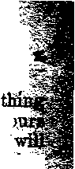

f
f

May 1922, Vol. Ill, No. 70
PyM PuliliKtiij<i every other uxxlc nl J8 Concord Street, Brooklyn, V. I’„ 17. 8. A.
Five Cents a Copy—fl. W) a Yeaif
Canada and Foreign Conn tri es» Sl.OQ
Vm.r:.rt: 3 WEDNESDAY, MAY 24, 1022 Nt.MUM TO
CONTENTS of the GOLDEN AGE
LABOR AND
Prices Are What We Makti
ECONOMICS
Can the Muh Itiules Be
SOCIAL AND EDUCATIONAL
Branding the Undo-drank'S 527
Darwinism iu the SuPnol* 533
Scientists Repudiate Darwinism ....
No Transitional Form,* Ex-
Variations Revert to Type 534
New I'orrns of Life Appear
Where Are the Supor-
Speculations Are Nor
manufacturing and mining
Mining Life in Oilio ____________________________________________________________
FINANCE—COMMERCE—TRANSPORTATION
Methuselah the Banker ....51.6
25K Tons of Gohl to ..... Square Inch __________________BIT
Ercd i’i^ the Gold Standard ............. 517
Ship-Owner Annroll 1 stS In Britain _________________________ 535
Principal Doubles in Ton
Four Centuries Would Buy the Earth ...... ..
POLITICAL—DOMESTIC AND FOREIGN
Warring against, the Papal Empire
AGRICULTURE AND HUSBANDRY The Massacre of the Farmers ....... ...
HOME AND HEALTH Remedies for Constipation
RELIGION AND PHILOSOPHY
Features of the Impending
Old Age and the Golden Age _____..............
Unsnarling the Hell Snarl 540
Fig Tree not yet Blooming 541
The Four Cardinal Attributes _____
Heights and Depths of Love ........
Studies in the '“Harp of God” ...........................-...643
Frtlfclwd othsr Wednesday it IS ec-nrcrd Street, Brooklyn, N. T., . . . . U ?. A by WOODWORTH, HUDQING8 ID* MARTIN CLAYTON J. WOODWORTH...... Editor
ROBERT .1. MART;5' .... Buitrew Manager WM. F. HUDOJNQR , f , , , . Bfc’y and Treif, Copartners and proprietor, Address: 19 Cowoi4 fitreet, Brooklyn, N Y.. . , . . U, fi. k. Five Cents a Copy — SLOP a Ybab Foreign oii-PTCEa : British : 34 Craven Terrace, Lancaster Goto, London W. 5’ Canadian: 2?0 Dundns St. Wj Toronto, OnT.irjo ; Australasian; 495 Colilno St., Melbourne, Australia. Mako rem''tian res to The Golden Age® Entered m second-flan Bstl«r al BrooklyB, N. X. Badar the Act of Murrt 3, 1871. .
1^" ■ ! --------- -------------------------- ------- -■gi
Volume III Brooklyn, N. Y., Wednesday, May 24, 1922 Number 70
i..-
(With Apologies to Methuselah)
"VTOTHINCr like this ever happened; but it clearly illustrates what is happening. It has a basis of facts, and Ilie calculations are reliable.
Prior to the flood there were ten patriarchs. The years wherein they lived, according to the true Bible chronology, were as follows:
b. c.
Adam ....................4129-3199
Seth......................3999-3087
Enos .....................3894-2989
Cainan ...................3804-2894
Mahakihel ................3734-2839
Jared ....................3669-2707
Enoch ....................3507-3142
Methuselah ...............3432-2463
Lainech...................3245-2468
Noah, to the floo.' ..........3063-2463
■ When Aiethuselah arrived on the scene Adam was getting well along in years; in fact, as the f- record shows, he had only 233 more years to y live: and realizing that he was growing old he said to Methuselah’s father: “Enoch, you have D always been a good boy; and now that you have to an addition to your family I feel like doing r something for your child, John D., Jr., my new great-great-great-great-great grandson; so here L, is $1.1 would like to have you put it out for him '' at interest : and when he is old enough, I would |... like to have him go into the banking business, h'* I think that there is a lot of money in that busi-t ' ness, if properly handled; and I will be ready, t as long as I live, to give my best advice as to how to safeguard the fund. My boy Seth wants * to borrow $1 from me right now; so we will lend it. the money to Seth at 6 percent interest. M e will K/.. let him have it on a sixty-day note; and then at the end of the sixty days he will renew the g. note, with the interest added; and so on indefi-k:' nitely.” ’
Principal Doubles in Ten Years
THIS seemed like an excellent suggestion to
Enoch, and so the transaction was made in due form. Seth gave his note for $1 on January 1st, B. C. 3432, and on March 1st renewed it for $1.01 and so on, at sixty-day intervals, with the following result: For convenience w’e give the principal of the unpaid note as it stood on certain stipulated dates, omitting fractions:
A Thousand-fold in a Century
ADAM saw that he was starting Methuselah off on a profitable path. While it had looked at the outset that Methuselah was going to make only 6 percent on his money, yet in actual practice the money had doubled itself in ten years and six months, so that, allowing for a time or tvTo w’hen the note went to protest, and thus brought additional revenues to the young financier, Adam discovered that Methuselah would normally double his money every ten years. In a little while, then, as things went at that time, Seth’s notes on January 1st of each decade were as noted on next page.
On January 1st, 3332, Seth came around to Methuselah and said: “It looks to me as though you are asking too much for the use of that dollar that you loaned me a hundred years ago today. I had no idea at that time that it would cost me over a thousand dollars for the use of that dollar for a hundred years.” But Methuselah had begun to see the value of his scheme; so he talked Seth into leaving the note, the same as usual, and let the money pile up, multiplying at the rate of over a thousand times a century, and took a mortgage on Seth’s home, to make sure that the interest and principal would all be paid some happy day. From that time onward business seemed to pick up rapidlv.
3362 B. C................... 128.00
3352 B. C................... 256.00
3342 B. C................... 512.00
3332 B.C................... 1024.00..
A Million in Two Centuries
ON JANUARY 1st, 3232, Adam came around to see how Methuselah was making out and was surprised to find that he had just renewed Seth’s note for the tidy sum of $1,048,576, and to learn that Seth had been compelled not only to give a mortgage on everything he owned but to borrow large sums from his children and his grandchildren to provide the collateral necessary to secure the loan.
In a little while (as things went then), namely, in only a third of a century, as Adam was ill, at the point of death, he sent for Methuselah to find out how the interest plan was working: and when Methuselah told him that Seth’s note* at that time was for $10,150,215.68 and that he held mortgages on all the then existing real and personal property of every sort on the whole earth, excepting Adam’s own house and the bed upon which he was lying, Adam just curled up and died.
Indeed, Enoch himself had become so disheartened at the way things looked that he. too, left the scene, sick at what he saw coming on the earth, and remained here only fifty-seven years longer. But in that time the bonds and bills receivable, mortgages and othei- collateral, in Methuselah’s hands had grown until the total was now $536,870,912. And the original dollar was still out at interest, working as hard as ever.
A Billion in Three Centuries
WHEN the third century came around, January 1st, B. C. 3132, ten years after Enoch had left the scene, the notes had reached to the sum of $1,073,741,824, and Methuselah was as wealthy as the wealthiest man living in the year 1922 A. I).: hut unlike him Methuselah was only nicely started in life.
From this point onward things seemed to come Methuselah's way. In the next century, down to the time of Seth’s death, which was a period of forty-five years, the notes came rolling in. When Seth felt that he was slipping away, he sent for the young banker to find out how much he really owed him for the loan 345 years previous; and when told in a stern banking tone of voice that it was on that date, January 1st, 3087 B. C., a sum total of $26,815,832,425.92, Seth gave one gasp; and they sent for the undertaker.
Four Centuries Would Buy the Earth
IT IVAS only a little while longer to the four hundredth anniversary of the loan. This period soon passed; and when it was expired, January 1st, 3032, the total securities in Methuselah’s hands, covering all the admitted indebtedness of Adam’s posterity, was the magnificent sum of $1,099,511,627,776. This was enough, and more than enough, if invested in a World War, to make the world safe for plutocracy. But Methuselah had more sense. He concluded to put it into the real estate business; for he knew that, with his interest-machine working properly, the world was safe for big business anyway—until something happened.
Looking the matter up in the Rand-McNally atlas of the. time, and confirming it by the “World Almanac”, Methuselah found that the total land surface of the earth is 54,807,420 square miles, which, at 640 acres to the square mile, amounts to 35,076,749,800 acres. He purchased the whole outfit at $30 per acre, and had the deed recorded; but as it all belonged 'o him anyway, he did not have to pay out any money. It was’ just a matter of bookkeeping. But even according to the books he had $47,209,133,776 left over, after buying the whole earth at $30 per acre, and without ever having done one stroke of work himself, all as a result of a “wise investment” of $1 left to accumulate by perfectly proper banking methods for a matter of 400 years.
How Could the People Pay it?
BY THIS time Methuselah had acquired the appetite for making money. He had learn-
ed the interest game thoroughly, and he now ~ ' went in for it in a large way. During the next P four centuries the fortune which he amassed in notes and bills receivable, mortgages, bonds and other collateral on all that wTas in the earth or ever would be in the earth was as follows:
Jan. 1st., B. C.
2932 $
2832 _____
2732 _____
2632 :
; 1,125,899,906,842,624
1,152,921,504,606,840,976
1,180,591,620,717,411,303,424
1,208,925,819,614,629,174,706,176
i; At this point Methuselah thought it was time for him to begin to build, and so he decided to
L' put a nice house on each acre of land that he
” owned. Figuring the matter up carefully he
found that on every acre of land surface of i. the earth, as a result of his frugality in letting that $1 work for him steadily for 800 years, he was able to erect on each acre a building which would cost him just $34,465,160,155,879 per <■ acre; and allowing that there would ultimately be 50,000,000,000, of Adam’s posterity born, | this would be at the rate of $689.30 for each one of them for each acre of the whole earth.
' Not being blessed by nature with any more sense than the law allowed, being ignorant of about every item except how to keep his old r interest-machine working, Methuselah started ? to build, using only solid gold, at $27 per ounce, for his building materials. His gold cost him, ■ delivered on the job, $648,000 per ton.
t.
L 256 Tons of Gold to the Square Inch
FIGURING up how much he would need, the old gentleman found that in every acre there » were 43,560 square feet of land and 6,272,640 - square inches. He reckoned up to see how many f tons of gold he could afford to stand on each square inch of the land surface of the earth, J and discovered that to place one ton on each ' . square inch he would be loading down each acre with a plate of solid gold amounting in value to $4,064,670,720,000. But as he had more than eight times as much wealth as this on hand, why should he care ? So he started to have the work done.
About this time his grandson Noah came along. We say about this time, but actually it was some forty-nine years later, and the build-ing operations were already under way. Noah asked his grandpa how much his wealth was at > this time, and was told that business had been good since Methuselah began to build, because he now had thirty-two times as much, and that therefore he intended to put 256 tons of solid gold on each square inch of the earth’s surface, instead of only eight tons as he had originally planned.
Erecting the Gold Standard
NOAH tried to reason with him; but the old man was getting cross and childish, and seemed to think because he was in the banking business that nobody else knew anything. So he roughly ordered Noah off the premises, meaning that he should get off the earth. Thinking the matter over Noah perceived that the only thing he could do was to take to the water; so he and the boys of the family got to work on their boat. They worked as hard as they could; for they could see that the old man was getting crazy and that things did not look a bit good for anybody.
Meantime Methuselah continued to do a good business. His little nest-egg had so grown by the time his 900th birthday came around that it was the neat figure of (if the pencil didn’t slip somewhere) $1,237,940,039,285,370,274,899,-124, 224. This wealth caused the old man’s mind to go back on him entirely; for he found that, building as hard as he could, it was impossible for all the inhabitants of the world to erect the gold as fast as it came flowing in. Therefore he determined to do something that would make his name remembered throughout all time. He had all the gold that could be possibly handled brought into one place; and there he erected on a plot a mile square a building of solid gold, which he called the The Gold Standard.
“As It Was in the Days of Noah”
THE great pile grew like magic, and kept get-ting higher and higher. They put in electric elevators and ran them like the wind, trying to keep pace with the delivery of the material, lifting it up and placing it in position. They had gotten up about seventy-nine miles when something happened. Probably nobody will ever know just what it was. Some said that the tower was.built too rigidly; it could not stand the strain of the great wind which blew away the iron, the clay, the brass, the silver, and the gold like the chaff of the summer threshing-floor. Others said it was because the foundation was laid in blood. Anyway, to the horror of all onlookers in the year 2463 B. C., it swayed a few moments, gave a sickening lurch, tore a big gap in the canopy, and came down with a roar, burying Methuselah and all of that civilization in the ruins. It fell, and great was the fall of it.
And when the canopy was torn, down came the waters, ocean deep, floating Noah and all his family to safety. If you look the matter up, yon will find that Methuselah died the year of the flood.
We reiterate the first statement of this article, namely, that “nothing like this ever happened”; but we leave it to the reader to judge whether or not any civilization can endure which is built upon the interest basis. There will come a time when the burden cannot possibly be borne. The "World War has made the burden already impossible. In a little while the great tower will fall and bury civilization in its ruins. When that time conies the only happy people on earth will be those who have learned well the lesson that the Word of our God which liveth and abideth forever is better, far better, than any image of gold that the supposedly wise but indescribably foolish financial people of the world have erected or can ever erect for their happiness or protection.
Appreciated in India By C. Manning (India) S MY subscription will be expiring shortly, I hasten to renew the same, money order follows. I request the favor of your continuing to send your good paper, which is clearly bringing to light the hidden things of darkness, in which the “god of this world” (age) has had a jolly good time, but evidence through the Golden Age is not lacking, that his number is up, and he shortly will be leaving the stage with his following.
The Golden Age magazine is truly being guided by the Author of light—Christ Jesus— and is fearlessly exposing all things which have blinded the minds of the common people. It is a pity that the “G. A.” is not printed and published in every country in the world, with news and information necessary in that particular part of the globe; for many things happening here are not happening there, and vice versa. But the dear Lord will arrange all that in due time. All the articles are good, but the specials are best.
A Golden Tribute By T. Hewitt (New Zealand)
AVING been a Bible student from boyhood, I have been greatly interested in the Bible
studies appearing the Golden Age. . . . The unregenerate cannot interpret the Book of books for my soul’s welfare. It is impossible for them to do so because the spirit of God docs not speak with them. . . . The late war troubles were foretold in the Book of books. The spiritually minded saw this looming over evil-doers, but were powerless, being outnumbered by big church and the kings of the earth. But if we are blessed with spiritual eyesight, we see the oceans of God’s love for the faithful.
Doing a Great Work By Tom CuUen
OU have a remarkable publication; and while I am anything but religious, I cannot but bring myself to believe that you are doing a great work. You are to be congratulated on the compilation of your articles, and on such contributors as 0. L. Rosenkrans, Jr. His article, “The Counterfeit New Era,” in the issue of December 21, is commendable, to say the least. It is splendidly written, and mirrors life as we have seen it for the past twenty years. I am widely advertising the The Golden Age, and this article in particular, and will continue so to do. Not alone is Mr. Rosenkrans’ article good to peruse, but every one I have been able to get hold of is most interesting reading.
Full of Vital Topics By Robert Fisher
THIS is just to express my appreciation for the wonderful and inspiring reading matter that is contained in the Golden Age magazine. It is the most wonderful magazine that is printed today, so full of the most vital topics. And to know these are just foregleams of what the Golden Age is going to be I Truly every creature in heaven and in earth will be singing praise unto our heavenly Father then. The "Harp of God” study is truly wonderful, so simple to understand. I think its simplicity is what makes it so noble, just like the teaching of our dear Master; and may His blessing attend your untiring efforts to herald the incoming Golden Age.
Evangelical Protestant Society
HEADQUABTBBS
118 Fulton Street, New York City
“The Protestant”, 52 Bliss Building, Washington, D. C.
March 29th, 1922 Bev. J. F. Rutherford,
Pastor, International Bible Students Assn., Brooklyn, N. Y.
Dear Sir and Brother:
A number of gentlemen here in New York, appreciating the seriousness of the Roman Catholic encroachments upon American institutions, have organized a Society known as the Evangelical Protestant Society.
The objects of this Society are to defend and promote Evangelical Christianity in cooperation with Evangelical churches; and to defend American Democracy against the encroachments of Papal Rome. This movement is designed to be nation-wide and international. It is to be a fight absolutely in the open, and its work will be constructive rather than destructive. It is to be a sustained and permanent effort, working through the various Evangelical bodies of this country; and it is the purpose of the organizers to fight the Romanist evil in three practical ways, as follows:
(1) By intensive Evangelism throughout the length and breadth of the country.
(2) By pitiless publicity — showing them up to the American public, including their own members.
(3) By combating them in a political way along the lines employed by the Anti-Saloon League.
This movement has been inaugurated during the past few weeks, and there are a number of well known men who are ’dentified with this movement as “Charter Members”. Only men of the highest character and influence are desired as “Charter Members”; and as soon as 100 or more have been enrolled we will then elect officers and begin operations.
Among those who have become “Charter Members” are:
Dr. David James Burrell, Marble Collegiate Church, N. Y.
Bishop Wm. Burt,
Methodist Episcopal Church, Buffalo, N. Y.
Dr. John Roach Straton, Calvary Baptist Church, N. Y.
Judge Gilbert 0. Nations,
Editor of “The Protestant”, Washington, D. 0.
Mr. Allen W. Johnston,
Author of “The Roman Catholic Bible and the Roman Catholic Church”, Schenectady, N. Y. Dr. Robert Stuart MacArthur,
President, “Baptist World Alliance”.
Rev. Edwin D. Bailey,
Prospect Heights Presbyterian Church, Brooklyn, N. Y.
Db. Curtis Lee Laws, Watchman & Examiner, N. Y.
Dr. Frank M. Goodchild, Central Baptist Church, N. Y.
Rev. Oscar M. Voorhees,
General Secretary, Phi-Beta-Kappa, N. Y. 0.
Mr. John W. Ripley,
50 Church Street, N. Y. C.
Rev. J. A. Davis,
Inland South American Mission, N. Y. “ and many others.
We are very desirous of having you as one of the “Charter Members”; and I am enclosing you herewith a. copy of the Manifesto, Preamble and Constitution of the “Evangelical Protestant Society"’ and would ask you to look these over very carefully, and then kindly sign the copy of the Preamble and return it to me, when you will be duly enrolled as a“Charter Member” of this Society.
I think you will agree with me that it is time for us to be up and doing, and we believe that the “Evangelical Protestant Society” will fully serve the purposes for which it has been incorporated. This movement was born in prayer.
Thanking you in anticipation, I remain, Yours sincerely,
Evangelical Protestant Society. By E. C. Miller, Chairman.
I.eply to the Foregoing by the President of the International Bible Students Association
Brooklyn, N. Y., March 31, 1922.
Mr. E. C. Miller,
Chairman, Evangelical Protestant Society, 113 Fulton Street, New York, N. Y.
Dear Brother Miller:
Your very kind favor of March 29, inviting me to become a charter member of the Evangelical Protestant Society, to hand. It is very good and kind of you to invite me so to do, and I deeply appreciate your confidence. Likewise I appreciate your sincere desire to see removed from the land the institution that Satan has used for such a long while to the detriment of mankind. But I must decline to accept your invitation to become a charter member of your Society. Being a Christian and devoted wholly to the Lord Jesus Christ, and believing that Papacy is inimical to Christianity and the welfare of man, you may be at a loss to understand why 1 decline to join your organization. For this reason I set forth the following explanation :
519
Jesus taught His followers to pray: “Thy kingdom come”. When He stood before Pilate He said: “My kingdom is no of this world”. By the word world, as we hot', understand, He meant the social and political order and not the literal earth. Both He and St. Paul declared that Satan is the god of this world. Jesus sent forth His disciples to preach the gospel of His kingdom until its establishment. He did no' authorize them to preach American or Englisl democracy. Satan over-reached the loaders in the early part o the Christian era, organized the Papal system of Rome, which system early joined hands with commercialism and professional politicians, and which alliance the Lord through His Prophet designates by the term “beast”. Luther and others led a great reformation movement, resulting in tremendous good and the formation of Protestant organizations for truth and righteousness, in the name of the Lord. But in time the leaders of these various Protestant organizations united forces with commercialism and politicians, and both Catholic and Protestant systems became a part of Satan’s empire. In both Catholic and Protestant organizations, howrever, there have always been some real, sincere Christians: and these have continued to pray: “Thy kingdom come".
The great event to which every real Christian has looked forward has been the second coming of our Lord and the end of the world.(Matthew 24:3) In this chapter cited Jesus details the evidence that would mark the beginning of this long-desired event. Such evidence began to manifest itself in 1914 with the be,ginning of the World War. Careful students of prophecy could see, measuring the record by Biblical chronology, that this World War marked the beginning of a change of dispensation. It was then the duty, as well as the privilege, of all Christians to preach the message of the Lord’s kingdom and not the message of murder of fellow-men. If the peoples of the world wished to ' war, that was their business. Christians represeated the Prince of Peace.
But you will agree with me that Catholic and Protestant organizations alike joined with other worldly institutions to preach the people into the war; that all Christians who dared to stand for the teachings of Jesus and the apostles (2 Corinthians 10: 3, 4) were persecuted and many sent to prison and others flogged, tarred and feathered, and dl-treated; and that in almost every instance such unjust persecution was begun, encouraged and carried on by those who claim to be ministers of the Protestam and Catholic churches. The reasons for this and a brief history of the events are set forth in The Golden Age, Number 27, under the title “The Distress of Nations”.
The United States went into that war upon the slogan, “Make the world safe for democracy” ; and at the same time Catholics and Protestants joined hands to destroy religious freedom and democracy, and indulged in the worst religious intolerance and persecution America has ever known. During this war many Protestant, as well as Catholic, clergymen boldly declared from their pulpits to the yeomanry of the land: 'Go to war, and if you die upon the battlefield fighting to make the world safe for democracy, your death will be counted as a part of the vicarious sacrifice of Jesus Christ’. Such a statement was not only wickedly false, but the worst kind of blasphemy upon the Lord’s holy name. The record made by these clergymen during the war is a shame to the cause of Christianity. Some of that record is published in Numbers 60, 61, 62, 63 of The Golden Age.
As to the claim made by your Society, that the Catholics meddle in politics and seek to control the government and have designs upon the institutions of America, I fully and heartily agree. You may find some evidence to aid you and ' your workers in this behalf collated and set forth in The Golden Age, Number 46-47, under the title “Earth’s Oldest Empire”.
But. my dear Brother, as Christians, let us ask ourselves: What would my Lord have me do? You must agree with me that a Christian holds a commission higher and greater than any earthly government or organization can give to mam That commission is not to preach American democracy or English democracy. It is not
to destroy the Catholic system; nor is it to join hands with big business and big politics to coni’- ' trol the world. It is not authorizing one class to persecute fellowmen; but it is a commission of
|^{ love and mercy for doing good. It reads:
“The spirit of the Lord is upon me. because the Lord 'r hath anointed me to preach good tidings unto the meek; *’>■ he hath sent me to bind up the broken-hearted, to proclaim liberty to the captives, and the opening of the ; ’ _ prison to them that are bound; to proclaim the acceptable year of the Lord, and the day of vengeance of our God; to comfort all that mourn.”—Isaiah 61: 1. 2.
Instead of preaching men into the Avar and encouraging such unrighteousness; instead of joining hands with big business and profession-'• al politicians to put the American people in an - alliance with disintegrating Europe, why not stick to the God-given commission and tell the It people the real remedy for their ills?
I have the deepest heartfelt sympathy for any man or organization wanting to see unright-:;r' eousness and wickedness eliminated from the r universe. I am sure there are many men of lovable character in vour organization, with the ? honest desire and purpose of destroying evil.
But, my dear Brother, let us take cognizance of ' the fact that it must be accomplished in the
Lord’s appointed way and in the spirit of the Lord. A Christian cannot join an unholy alliance that has to do with any part of Satan’s f kingdom. He must stand aloof from this and be a faithful and true witness for the King of glory. ^11 the nations are in distress and per-„ plexity, men’s hearts everywhere are failing ~ them for fear, and all efforts that are put forth p- to bring order out of the disturbed conditions must fail, unless they are in harmony with the divine arrangement. Briefly stated, I understand that divine arrangement to be this:
• That God through Christ Jesus has provided redemption for all who will be obedient to righteousness; that He first takes out from the world those who shall compose the church, the gi members of His body; that this work is about gf completed, and when completed and His king-dom is in operation the blessings of life, liberty •; and happiness will be offered to all mankind, g’- and those who refrain from violence and evil now will be amongst the first that will be the recipients of the Lord’s blessings; that the end Bjr of Satan’s empire is here: that we are at the v-end of the old wicked world; that the evidence of these facts, testified aforetime by the Lord Jesus, has been manifest since the beginning of 1914, when began the great World War, followed quicldy by famine, pestilence and revolution, which Jesus declared would mark the beginning of the passing away of the old order. (Matthew 24; Luke 21) This is good news to Christians and every one that loves righteousness. Why? Because it means the kingdom of heaven is at hand—that which will bring relief and blessing to the people, lienee, Jesus said: “This gospel [good news) of the kingdom shall be preached in all the world for a witness unto all nations, and then shall the end come”.—Matthew 24:14.
Permit me to say, dear Brother, that your efforts and those of your organization to defend American democracy will be uselessly spent. Christians are ambassadors of Christ’s kingdom, not of some earthly, political organization. Why not obey, then, the Lord’s command? Why not fulfill the commission He gave by going forth and telling the people that the kingdom of heaven is at hand and that its establishment and operation is the only panacea for the ills of humankind? Why waste your efforts to patch up the decaying elements of Satan’s empire! Soon that empire, in all its elements, including the wicked Papal system and the daughter Protestant systems that have likewise followed a similar course, will pass away, and instead will come in the peaceable kingdom of the Lord. Then “the government shall be upon his shoulder; and his name shall be called Wonderful, Counsellor, The mighty God, The everlasting Father, The Prince of Peace”.—Isaiah 9:6.
If you believe that you can advance the cause of Christianity by defending American democracy against the encroachments of Papal Rome, then go on and do so. You may prosper; you may not. As for me, I must preach the message of Christ’s kingdom and nothing else. I cannot feel that the spirit of the Lord is in anything else now.
I have pleasure in sending you under separate cover copies of each of the above-mentioned numbers of The Gowen Age and a copy of each of my books, “Millions Now Living Will Never Die” and “The Harp of God”. I hope you will receive them in the same kindly spirit in which they are sent.
Believe me, my dear Mr. Miller, yours for the cause of righteousness,
Very sincerely,
J. F. Rutherford, President.
A STANDARD price makes a stable dollar.
- Silver and gold are products. Their relation to each other has been established by law. They have been divided into units of which the dollar is the standard, other units being fractions or multiples thereof. The purpose of this was to provide a value easy to handle and in convenient amounts to be used as a medium in the exchange of other values.
But it has been left to those interested to determine as best they can the ratio between money and product, labor and product, or product and other product, with the result that prices are being arrived at without system, and consequently are unstable and unsatisfactory.
WHY GOVERNMENT MONEY?
Just why the Government has given gold and silver a standard weight, a standard fineness of metal, and a standard ratio between each other, and has left other products, prices and property unstable is one of the questions the present is always asking of the past. The only plausible answer is that money was put under government regulations and other products were not. If the order had been reversed, products and other values standardized, the ratio between them established and gold and silver left in the hills, we would not now be $350,000,000,000 of gold in debt.
One reason why prices were not put under government control was that the people deemed it one of their inalienable rights to bargain, trade, corner, squeeze, bull and bear, to the full extent of their several abilities, so that right has proven itself to be $350,000,000,000 wrong. It is quite often policy to forego some rights, especially if they are questionable.
If gold and silver, as products or specie, have a specific value it is being badly disordered by the man that pencils the price tag. If they have not, the price-maker is the only person that can stabilize their buying value.
If a different price is named for each transaction we say prices fluctuate. That is not because the value of product has changed, neither the value of gold, but some of the multitudinous ramifications of the human intellect have directed the pencil to make new figures.
As a standard of value the dollar represents 25.8 grains standard gold. As a medium of exchange it represents any old thing agreed up-
on; add to or take away a part of its cont and it will still function in the same manner.
The only conclusion is that prices are con-^tg trolled by the price-maker. He may be coxk^| trolled by motives, circumstances or other causes, not excluding his wife’s opinion. The J* fact that commercial values are as stable as yardstick until some one changes the price is-'^ proof conclusive.
If the relativity of money, labor, product, "s and other values were established by law, as.g they should be, several of our large questions would be answered. But before we attempt tofS establish prices we should evolve a plan that plain and practical, that comprehends the equate rights and means of all to labor and enjoy the-;.) fruits thereof, for if prices are permanently fixed on other than a just basis we perpetuate^ injustice.
However, there could be no system more un-.pj just than the common practice of naming, or being forced to accept, a price as far from jus*-^ tice as supply, demand, competition or other cir-rj cumstanc.es will admit. -
Establishing prices on an existing price-level^ would work justice, providing each article was priced right when established, otherwise hot;-^* but if prices had the habit of being right there would be little need of fixing them. So wisdonr"*] suggests, as justice demands, that the price of each article be rightly determined before being established. -I
VALUE VERSUS PRICE |
The maximum value of product cannot be-* measured. If we could determine the value of' one calory of food to life we could compute the .-value of life, which value is not determinable. J® There is nothing to compare to life, nor can kJ there ever be. This explains why men of all ages have looked in vain for a measure of?? value. --g
Nature’s great store-house (air, water, and j earth) is filled with values, each contributing -.S its part to life. Man’s province is to assists nature in production, to gather, combine, and-3 store these values for use. This we call work, 'f labor, expense; and in measuring and dividing^ this expense we are interested collectively. ‘
Our system of production, manufacture, sale, and distribution is complex. Into it are woven 'JS the lives of our whole people; and on them^-a
MS " '
should the expense of living bear equally, as also the blessings of life. This we believe can best be done by measuring the expense in laborhours and bartering the labor content or earned increment at labor cost.
This implies the standardization of all product. The word “standard” applies to the thing measured or established. When one or more
qualities of a product are measured or established, it becomes standard in that respect. It ' may be standard in quality, standard in size, " standard in price.
( One product made standard helps in estab--■ lishing others until finally all will become standby.- -ard in every respect, as a product of standard r quality, produced by standard labor, working ■ standard hours, receiving a standard wage, the product to be measured by a standard measure, scale, or weight, bought with a standard dollar, | ' at a standard price, based on standard labor ' cost and standard quality. Necessarily price is I"' ' the last factor to be established; for to be equal g they must graduate with one another in order ? to represent the other standard qualities.
THE RELATION OF MONEY TO LABOR
There is one way to establish that relation which looks practical. Here it is: The Government could ascertain the daily average production of gold and silver per man enga ged in those pursuits. This average could be used as a base for the wage of all occupations. In other w’ords, we could say that a man was entitled to a wage equal to the average value of the gold and silver he could produce and coin in a day. That would fix the value of our money on a laborcost basis where it could be measured in laborhours.
f
f
PRODUCT PRICES
There are two things common to all product that should be considered in computing prices; cost and quality. Labor cost is the only legitimate cost there is. Usury and increase (Bible), interest and profit (modern), have no place in a system of fair-dealing. Figure six percent in interest or profit on all the wealth of the nation, and where would that colossal sum in addition to labor cost come from? It is due to those that hold the wealth and from those that labor.
It requires the proceeds of the whole product sold at labor cost to pay for its production; and that is as it should be. Surely people are entitled to labor cost for what they produce and distribute, and surely they should be able to buy other product at the same price. That leaves no balance with which to pay interest or profit. Adding six percent to the value of the property only increases the burden. Adding it to the price of product only increases the price of living and that increases the cost of the next product. So there is no way to get interest and profit excepting, it may be, out of the earnings of the producer or the savings of the consumer.
The quality of product may be determined by tests and measured or expressed in comprehensive terms as food calories, heat or power units, tensile strength, friction, resistance, long or short staple, etc. All product should be tested, graded, and classed according to their respective use.
LABOR COSTS
As the labor costs of articles vary greatly, compared to their quality or value for use, it is necessary to devise a plan by which e'ach article may sell at its comparative value, the whole product being labor expense. In the end each producer receives equal and full pay for his labor. We will take coal, to illustrate how this may be done. Coals in general use test from (say) 1000 to 3000 British thermal units, while their labor cost is practically the same. We will say it is $1.50 per ton, for all grades. We would price the coal testing 1000 B. T. units at labor cost or $1.50 per ton. At that rate a coal testing 2000 would bring $3.00 per ton. Another testing 3000 would bring $4.50, other qualities being equal. The 2000 test coal would show an excess value of $1.50 per ton. while the 3000 test would show an excess of $3.00 over labor cost. This unearned increment should belong to the public and be used in general expense. This might best be done by the government taking the coal at the mines at labor cost, selling it according to grade, the unearned increment to be earned in delivering, in place of going into the hands of the coal barons to be used in fighting anything that looks like a square deal in coal, as is done now, under our lax system of looking after things of collective interest.
JUST LEVEL OF PRICES
We believe the above system, if followed, would put prices on an absolutely just level where they could be permanently established by law. If it bears any defe. G, joint them out.
We should never stop until we have established the relation between labor, money, and product beyond controversy. The good effects of stable prices would be so far-reaching that they can hardly be comprehended. It would put the question of production and distribution as a whole where it could be worked out to the utmost efficiency without running counter to special interests.
We must be properly fed, clothed, and sheltered, before we can make progress in other lines of endeavor. The need of the hour is to determine on a system of economics that is perfectly just and right between man and man; then get behind it as one united people and put it into practice. Individuals or small groups of men may resent justice, but no large body of men will oppose anything they know to be perfectly just and right.
LABOR-HOURS
In conclusion, wre would say: Measure our money in labor-hours, measure our product in labor-hours, and then in dollars and cents. Prices once established should never be changed. The reason for this rigidity is that whenever a price changes it changes the relation of
Bbookltu, N.
all stored wealth to that product. If some must fluctuate, logically it should be the ho of labor. If product increases in quality it take less; shorten the hours of labor. If laboj^ and machinery become more efficient, it willWS require less time in production; shorten the^3 hours. If yields of fruit and grain increase/7'f it will require less labor; shorten the hours. If?^ more men are used in improvements there willySI be less left in production; lengthen the hour£M|| Prices are the most important factor in orrfcw economic system. They determine the relatioH^JM between money and other values. The fairaegSfgi of any business transaction depends on price on which it is based. It is of as much, olff|! even more importance to rightly determine.^ quality and price, than to measure quantity.
If our govermnent would make the necessa computations from a standard-wage base, and? stamp each article of product with its actu labor expense, also with its food contents oiF* service qualities showing the excess value, (if-? any), added to make the selling price, the publia would soon learn what a fair price is and would demand it. Have wTe any proof there have ever-been any fair prices? If so, by what rule can it.,^ be proven? .
DIOGENES is said to have searched the world for an honest man, and failed to find one. The writer has been searching for years for an honest publication, one that would tell the truth, so far as humanly possible. He has tried the magazines, the daily press, the religious press, and even the Socialist press. The first three mentioned he has found filled, more or less, with the propaganda of big business and big politics; the last, while better in many respects, was also unreliable. But in the The Golden Age he has found his ideal. There is no propaganda; it aims to tell the truth, regardless of whose toes are trodden upon; and it is not controlled by the “interests”, whose touch means corruption.
Ten years before the World War, there were magazines — among them the American, McClure's, Cosmopolitan, Everybody’s, Hampton’s —and some of the daily papers, not controlled by the big financial interests; but today this has
• ’ ''J
all been changed. At that time we also had fear-^4® less writers: Ida M. Tarbell, Lincoln Steffens, Ray Stannard Baker, Charles Edward Russell,/^ and Ben Hampton were among the best known, although there were many others just as strong."'^ “Muckrakers” they were called by those whose^ dark, sinister workings they exposed to the. light of public condemnation. Where are they/^g today? Some have been wrecked, both physically and financially, by those whom they exposed; the others have been “outlawed” by these same <3 “interests”, and no magazines or newspaper'-^ dares print what they write under penalty of being killed financially or forced into bankruptcy.
Go to a news-stand, examine the magazines, and what do you find? Some filled with stories,-^ many with propaganda, others with a lot of drivel about some rich, profiteering grafter who''J| is held up as a model for the youth of our coun-^ try to emulate! Still others are devoted to thetr
.which would arouse "honest citizenry.
The writer spent
^blooded, He-Man articles exposing the crook- . edness in our state or national life, nothing
pictures of "tainted” movie actors and actresses, or filled with sex-slush to tickle the palate of romantic old ladies or foolish, love-sick schoolgirls. All is soft-pedal stuff; none have red-or national life, nothing
the fighting spirit of our
twenty-five years in the
« newspaper game and knows whereof he speaks. Through years of contact with the national magazines and daily papers he knew their policies t and has watched them fall, one by one, from their high estate, until today the utterances of practically all are controlled from the business office. If further proof is necessary, the recent exposure, through Congressional investigation, I of how big business and the war profiteers bought the control of twenty-five of the leading daily papers of this country, and through them, by their dastardly propaganda plunged us into the World War, a $25,000,000,000 war debt, and stole from the taxpayers many billions of dollars, should convince the most skeptical.
The and one at a con-the
The Golden Age has made many exposures of big business in the past, but I wish to bring ? out one side of their "work which netted them * many billions. During 1919 and 1920 the press 4 was flooded with propaganda, urging the farmer to produce larger crops and more Hvestock. He ■» was told that Europe was starving and would f: take all he could raise at high prices. After the crops had been safely planted, the propaganda f changed; farm sales at unheard of prices began to appear in the papers. Farms were reported ( to be selling at double and even treble former prices. Long lists of sales were printed all over the Middle West in which farms were reported r to have sold at from $300 to $500 per acre, which i * were worth only $100 a few days before. ” clamor became louder and louder; higher higher went the inflation. Farms bought g ~ day were reported to have sold the next g phenomenal advance, until even the most Jg; servative farmers and investors caught s speculation fever and became “frenzied financiers”. Credit could be had almost for the asking, money was as free as water; farms and v homes were mortgaged to obtain funds for "first payments” on land which the buyer hoped to sell in a few days at a big profit. Then, just the right moment, when every credit had been Strained to the last dollar, when big business had its vaults filled with farm mortgages, they closed the flood-gates, the money supply stopped and—BAM! it was all over, except the foreclosures.
It is a sad story. With his home or farm mortgaged to the limit, all the money accumulated by many years of saving, long hours and arduous toil, tied up in first payments, with the largest crop in the history of the country on his hands and no way to get it to market, because big business refused to furnish freight cars while thousands of “empties” stood idle on obscure sidetracks or were moved about from place to place, the producer saw prices go down, down, down, until far below the cost of production; and when he complained he was advised by his banker and through press propaganda that he must sell anyway, and was called a slacker if he refused to take what was offered him.
Oh I it was a fine game, and big business netted from three to five billion dollars from it; and the end is not yet. Hundreds of thousands of farmers are bankrupt and are helpless, while their homes and farms are slipping one by one into the hands of Shylock. Thousands more, who mangaged to hold on during 1921 in the hope of relief from low prices, are losing their all this spring. The records of every county in the big agricultural section, are black with foreclosures, while Wall Street fiddles, and food speculators and stock exchange grafters amass fortunes gambling with that which the farmer had to sell at a loss.
Did big business stop at this! No, indeed! There were other riches which they coveted. Billions in tax-free Liberty Bonds—bought by both farmer and laborer at 100 cents on the dollar, who were in many instances forced to borrow the money to buy them with or be branded as slackers, during the frenzy of war times— were still to be gobbled up. By bankrupting the farmer and throwing millions of laborers out of employment, big business was able to gather in the bonds at 70 to 80 cents on the dollar. Then when the last one had been squeezed from the original buyer, the price almost immediately went to near par.
That many papers and people are the innocent victims in helping spread the propaganda of the interests, there is no doubt; but that it is directed by those who expect to profit thereby, is also true. Witness the drive to inveigle this country into the League of Nations last year and, what is as bad or worse, the Four Power Pact this year, under the guise of a “Disarmament Conference”. While the country was taken up with the clamor of the “Disarmament” show, the stealthy propaganda for putting over on us the iniquitous Sales Tax and the repeal of the Income, Luxury and Excess Profit taxes —the ones through which big business is forced tn contribute to the expenses of govermim”+— goes merrily on.
■A
s'f
-i
Satan and his allies, big business and big politics, may keep us down for a while by sitting on the safety-valve. But believe me, it is golfing pretty hot; and some of these days the pressure will get too strong; and then the despoilers of the common people, the arrogant heads of big business, who corrupt our courts, buy seats in Congress and own our legislators; these de-bauchers of the righteous, traducers of the truth and trampiers on our free press, free speech, and the glorious Constitution will get their just deserts; for is it not written: “I will visit on the earth its evil, and on the wicked their iniquity; and I will cause the arrogance of the proud to cease, and the haughtiness of . the tyrants will I humble”?—Isaiah 13:11.
And again; “Come now, you rich, weep and y lament over those miseries of yours which are x approaching. Your securities have become worthless, and your garments have become \ moth-eaten. Your gold and silver have become rusted; and the rust of them will be for a testi- Y mony against you, and will consume your bodies like lire. You have heaped together treasures . for the last days. Behold that reward which you have fraudently withheld from those laborers who harvested your fields [the farmers] cries out; and the loud cries of the reapers has entered the ears of the Lord of armies.”—James 5:1-5.
They may postpone the day of retribution for a few years with espionage laws and the methods adopted by the Department of Justice \ during the war. But like a cancer, whose growth cannot be stopped, the longer the operation is deferred, the greater the danger to the life of the patient. Will they see their evil ways and y take warning in time prevent the day of reck- d oning?
T AM postmaster in our little town; and when the mines work I work in the mines, while my wife takes care of the post office. Of course my wife does not have to take charge of the office very often, as there is but little work at the mines the present time.
The idea that I am wanting to convey in this article is to show the city folk, and those of the small towns that have no mines around them, the real working conditions of the despised coal miners.
We are supposed to have a working-day of eight hours. If a husband and father is the man that he ought to be, he arises while it is yet night, at 4:30 A. M., starts the fires and gets things in order for the good wife to arise a half hour later, to prepare his breakfast and pack his dinner pail, so that at 6.00 he may take his departure for the workings.
He proceeds to kiss the good wife and tells her to have no fear but he will return in the evening to her and the kiddies, knowing full well that when he enters the mines, with millions of tons of rock, slate, and dirt over his head his life may be crushed out at any moment, and he may be carried home to the good wife and the kiddies a corpse.
I have seen that right here in our little town more than once. I saw a father and a son both mustered out of the service in that way at once.
We work at all times by artificial light. For years I worked by the light of a single candle power, but thanks to science for the invention of carbide, we have a better light now.
When you enter the mine you must look out for gas, and after the gas the black damp that-endangers your life at all times. When a boy I have gone to work with my father, and found the room blocked against entrance with a board, ■ and the word “Gas” written thereupon. My father would take off his coat, and in the dark feel his way to our work, and with his coat fan the gas out into the main airway, so that we could perform the day’s labor.
Life in the mines is also endangered by the electric power. In walking the main hallways,
if you touch your head against a wire it will tyring you down in an instant; and if your heart is bad you may stay dowm.
' ■ I knew a boy a short time ago who while hauling coal became entangled in the wires. They went in and got him at quitting time. The coroner’s verdict read, “By accident”. I wonder why those wires were not put over on the rib
L of the entry, where he or his horse could not s? get into them.
Also, when we are in the mine, we work by * artificial air, pumped into the mine by the use £ of a fan; that is, when the fan runs. When it stops for an hour or so we don’t work by any, | and the powder smoke is so terrible at times f that your head aches as though it -would burst. | But we must work or we cannot live.
Then there are miners that toil in water sev-r oral inches deep in their entry or room, as the
Amid these conditions, with bad tops over our heads, with death-dealing gases, impure air, dangers from electric wires and with water under foot we work from 7.00 a. m. until 3.30 p. m., timbering our own places, laying our own track, shooting our own coal, handling our own slate and refuse, and buying our own supplies. In
Branding the Undesirables By n. a. Eckerman
NOT long ago, in conversation with a party of men, the Henry Ford proposition of taking over the Muscle Shoals came up. One of the party called Mr. Ford a vile name, stating that men who try to upset precedents which have been in vogue for years are nothing but bolshevists and socialists. This conversation opened up a line of thought.
All will agree that the man who would seriously make such a remark is an undesirable citizen. Have we other undesirables, and who are they, and how shall we deal with them?
Should men be classed as undesirables, traitors, when they have filched six billion dollars of the savings of the people, as the Denver Post of January 5, 1922, reports that the Wall Street bucket-shops have done?
Should people be classed as undesirables, traitors, who make and sell illegal whisky, knowing in advance that the proven results are blindness and death? One Chicago undertaker reour town we mine from six to ten tons per day, each.
For powder we pay $2.30 per keg; carbide is 8| cents per pound; squibs are 25 cents per box; coal augers are 14 cents each; picks are $1 each; shovels are $2.50 each; and there are bars, slate hooks, wedges, and other things too numerous to mention that also have to be purchased.
For working under these conditions we receive at my own town 80 cents per ton for loading coal which has sold as high.as $14 per ton 80 miles from my home, and for which, now, at a distance of 50 yards from the coal car, I pay $3.25 per ton.
Out of my eighty cents a ton I have rent to pay and must also pay the butcher, the baker, the grocer, and the parasites that never, did an honest day’s work in their lives. The question is, Where is the getting-off place to this kind of thing?
I am glad that the time is drawing near when all wrongs will be made right, under the rule of the Prince of Peace. I am not a professor of Christianity, i. e., not a member of any creedal church, but I have the truth, and it is more precious to me than all the gold in the world. I would not part with it for any sum of money.
ports that sixty-five percent of his burials result from this cause of death.
Should doctors be listed as undesirables, traitors, who, with full knowledge of the results, and doing it for profit, sell the various kinds of outlawed drugs, such as morphine and opium preparations? Could we not remove some of the temptations from these men by making sale of these drugs absolutely illegal, the Government only having the right to dispense them, free, on physicians’ recommendations?
How about placing on the undesirable list, for deportation, those who deliberately sell stock to their fellow men which they know has nothing more substantial back of it thanabrainstorm and blue sky?
Is it not about time to place on the undesirable list, for deportation, those who, entrusted with office, deliberately throttle the will of the people for the benefit of a few unscrupulous financial thieves?
And why not list for deportation those who are so quick to cry out against reformers, as though they were a nuisance, when these are only calling attention to gigantic wrongs that ought to be righted?
And then we have the “regularly ordained” undesirable who, to save his job, is willing to perpetuate a system of lies, even admitting privately that the Scriptures do not teach the doctrine of eternal torture, but that he does not think it best to tell the people all the truth on the subject.
Then, too, there is the charity undesirable, who solicits and collects funds for some worthy cause, applying eighty cents out of every dollar to his own use. How about deporting him?
And then we have a gigantic organization which collects millions of dollars from the public, ostensibly for the maintenance of homes for the deserving and unfortunate, but which, instead of applying its income from rentals and vj membership fees to the ends it is supposed to « serve, pays out salaries of $10,000 to $15,000 per year to a number of figureheads, while some ~ of the donators are practically starving today. - s.-How about having these guilty men listed as un- 7 desirables, and deported?
Millions of people who daily come in contact . with the above and other undesirable classes have a great lever which they can use to better : conditions, and which would be of great value to the undesirables themselves. Would it not be ; a good idea for those who thus come in contact with men who are undermining their own characters and doing untold mischief to others to -proclaim them loudly as undesirables, fastening the name only on those who are known to deserve it? Would it not help some who are now . . secretly fighting the truth to take a final stand on the side of justice and right?
jg
be Fed? By John Buckley
SOME years before the World War, an English writer of fiction published a work entitled '‘Joseph’s Dream”. The story showed the inability of England to subsist her population for more than a few weeks, and developed a submarine attack by France, which wms intended to starve England into submission. In every feature and condition it was what the Germans tried to do, ten years or so later.
We in the industrial districts of the Eastern States face a condition similar to that of England. Sixty-five percent of the people are engaged in industrial work, and we cannot subsist our own population.
We fiace a danger as great as England ever had to face. We are absolutely at the mercy of a foe that is in a position to cut off railway communication. An extensive strike in the coal fields would close our factories, and a strike in the Middle West would bring starvation to the - workers Tn our Eastern cities. The situation is becoming critical and starvation confronts many of the workers.
The Government does nothing to avert disaster, and by the suspension of work on war ships hastens the day of general reckoning. On the fourteen vessels on which work has been
stopped, there were approximately fourteen tyjg thousand workers. In the manufacture of ma- ’' tori al for the vessels we may safely assume that there were three times as many, making a total ' of 5G,000 more that are added to the already vast army of unemployed. - .-Ji
Many of us remember the Pullman and other strikes which have taken place in the West, and we are rapidly approaching a situation that will be vastly more difficult. Among the many con- 48 dieting interests, each of which is fighting for life, there is little chance for improvement in conditions. Be an optimist if you can, but don’t forget to retain a little common sense.
It is generally admitted that history repeats itself, and it will probably continue to do so. ’ The different conflicting interests will contin- Mg ue to oppose each other, and will defeat any ef- '« fort at change. The growth of the cities will -3 continue until the vast accumulation becomes 7S a burden too great to be borne, when they will destroy themselves; and then our society will crumble to ruin, to be built again upon a better J| and more lasting foundation. Warfare is the jg state that has brought the greatest changes to the world, and the scrapping of armaments • means but the retirement of obsolete methods.
Clear the Way By l. d. Barnes
THERE are so many things worth while. A . war-worn -world, racked with famine and i, pestilential experiences, bankrupt, and now cursed with idleness in the year of greatest need, should call forth the best men and the < best that is in them. Great organized bodies of ? men acting as one and properly led could shake r the old, time-serving parties, having no goal, . no uplifting purpose, from their sandy founda-? tions.
There are three great organizations of war's. riors: The American Legion, the Soldiers and 1' Sailors Legion, and the Veterans of Foreign | Wars. Guided with zeal in the right direction L with one aim, as one man, to accomplish real g. and lasting good, these dormant energies stir-| red could measurably check the reckless, down? • ward course of the world.
If these fine men in whom are great possi-f-- bilities, assisted by other compact bodies of > strong men and women, would work as one for the common good, they could accomplish won> ■ derful things. Suppose such organizations ' would specialize on some one or two basic ref forms — after the manner of the Anti-Saloon ~ League — and picket the “dads” until the thing £ was done. Imagine those fellows with a combined strength of five or six million votes clam-f oring for a limit on private fortunes or land !:. reform.
t These are problems which lie at the core of ■ social welfare, and should engage the attention - of reformers great and small. These are among things worth while. A half million dollars
' should be the limit of private holdings. The - large fortunes are unnecessary for upkeep, as ■ no family could use up these amounts in the . most liberal comforts of life. Large fortunes are a menace to the race. Wars are planned and executed by rich men in their own interest;
, and the poor are oppressed in order that a few may lay up great riches. Legislation is inter, fered with by powerful lobbies, and the ballot \ is corrupted. The recent seating of Senator Newberry is a demonstration of this fact.
z The holding of large tracts—millions of acres by individuals or corporations — is an undermining evil, a gross injustice to homeless generations. No individual should be permitted to control more land than is necessary for private uses. The land should be free to all who desire
; a home site or a homestead tract, and land not in actual use or cultivation should be thrown open for settlement.
Large holdings of mother earth are enormous. Up to thirty years ago it is stated that Congress had given away of the public domain to railroads and other corporations 266,000,000 acres, about equal in extent to France and Germany, two countries which support, between them, a population greater than that of the United States. Private ownership of large tracts is common. Henry Miller was reported to have control of 4,500,000 acres of fertile land — 22,000 square miles, equal in extent to the total area of Massachusetts, Connecticut, New Hampshire and Rhode Island. One Colonel D. C. Murphy of New York, held title when he died to over 4,000,000 acres. One hundred men held title to 17,000,000 acres in the Sacramento Valley alone. The steel trust held title to one tract of valuable coal land, estimated to be worth $60,000,000. The United States Leather Company held 500,000 acres of hemlock timber. Another one-man concern held 30,000,000 acres. These are samples taken from a long list published in 1911.
Here is an evil under the sun, a gigantic steal from the homeless unborn. Here is a needed reform worth while. Ambitious reformers, take notice! Why waste time chasing delinquents, and interfering with the God-given rights of suffering patriots and pioneers in advanced political and religious thought?
In this connection we think of the great church organizations that have so miserably failed in their self-imposed task of converting the world. Here is a field of endeavor wherein even the clergy could retrieve some of the past, removing some of the stain of false pretenses attaching to their profession. Here is another world for the Anti-Saloon League to conquer.
It is not the thought that the Millennium could thus be set up; but an approach could be made to the Millennial standards, when private greed will be abolished with every other evil. The many Bible statements against “oppression of the poor” and to the effect that “the land shall not be sold forever” apply to that bright day of human uplift. In the Golden Age, under Messiah’s rule, the land question with all others will be settled aright. Every man will have his home and be protected in it. It will not be a rented hovel but a home, sweet home— one that will sustain its keepers. Yet until then it would be grand to see some fine people impervious to bribes and “handouts” get to work seriously for the common good.
“Men of thought, be up and stirring
, Night and day.
Sow the seed, withdraw the curtain, Clear the way.
■ Men of action, aid and cheer them As you may.
“There’s a fount about to stream;
There’s There’s There’s
light about to beam; warmth about to glow flower about to blow;
There’s a midnight blackness changing Into gray.
Men of thought, and men of action, Clear the way!
“Once the welcome light has broken, Who shall say
What the unimagined glories
Of the day?
What the evil that shall perish In its ray ?
“Aid the dawning, tongue and pen;
Aid it. hopes of honest men;
Aid it. paper; aid it, type;
Aid it, for the hour is ripe;
And our earnest must not slacken Into play.
Men of thought, and men of action, Clear the way!
“Lo, a cloud’s about to vanish
From the day;
Lo, the right’s about to conquer;
Clear the way!
Many a brazen wrong to crumble Into clay.
“With that right shall many more Enter smiling at the door;
With the giant wrong shall fall Many others, great, and small, '
That for ages long have held us
For their prey.
Men of thought, and men of action, Clear the way!”
Brooklyn, N. -'Jf
—Charles Mackay
[Ed. Note: True reformation can come and ' will come only when the great Messianic king- . dom is in full sway. ££When thy judgments arc in the earth, the inhabitants of the world wall learn righteousness.”—Isaiah 26: 9.] *3
IN THE “Regulations for Preventing Collisions at Sea”, adopted by the principal maritime powers there are many concise rules laid down to safe-guard the interests of those interested in the ships. These regulations are generally termed “Articles”, and when reference is made to any particular portion a number is given. Article 29 reads:
“Nothing in these rules shall exonerate the vessel, or the owner, or master, or crew thereof from the consequences of any neglect to carry lights or signals, or of any neglect to keep a proper lookout, or of the neglect of any precaution which may be required by the ordinary practice of seamen or by the special circumstances of the case.”
This rule is very clear, and does not need any interpretation. Now let us see how the British Coasting Trade puts this into practice.
It is usually recognized that “a proper lookout” consists of having an officer on the bridge, and another seaman on the lookout.
To put this into actual practice means the carrying of a crew of six seamen, three in each
watch. That means a man at the wheel, one on the lookout, and another to attend to the various duties ordinarily required in the usual routine i of the ship. Jt-
We would find few (if any) of our Coasters 1 thus manned. The usual is four seamen. This means that the lookout must be left when any 4 duties are to be attended to; such as, calling the watch, reading the log, etc. Thus the ship is actually without a proper lookout during a good portion of a watch. <
And yet the ship-owner has not been satisfied =• with this low standard of manning, but has gone | even a step further. Many ships are now man* ned with three “A. B.” [able-bodied] and one cook “A. B.”, this making the four. I suppose “four” closes the eye of the Board of Trade.
Let us now ask: How do you manage to keep your Article 29 under these conditions?
Well, we just have the cook “A. B.” on all day. attending to the cooking for officers and engineers. The other three men have usually been busy all day or a good part of the day in por^
either getting ship ready for cargo, shifting, and preparing for sea, etc. Then at sen one takes the wheel for two hours, and then goes to bed for four hours.
This system means that no lookout man is kept. The watch on deck during the night consists of an officer and one man at the wheel, who attends to the little duties that iimst he attended to, the officer taking the wh ■■!. Then you can picture him standing at the ..heel on a dark night, with the light from tie' binnacle in his eyes. We now have the ship going along without a proper lookout and without the attention of the officer.
I would now like to ask the question, How is it that the many Board of Trade officials do not see this kind of thing? And yet, if a shipmaster deposits his “Articles” (Articles of Agreement, i. e., a record of his crew, etc.) and has neglected to keep “the letter of the law” he is taken to task and must give an explanation for such a breach of rules.
This reminds us of the Jews at the end of the Jewish age, when they were very particular to pay their tithes, but omitted the weightier matters of tin* law.
Is it that big business is so much in control that it is prudent for certain officials to omit the weightier matters of the law?
We ofttimes find those in more humble positions, such as the ship-master, fined for some “breach"; but very randy do we find the shipowner so dealt with.
It is truly time that this utter disregard of human life comes to an end. We shall indeed rejoice Io see the day when a man is more precious than “the golden wedge”—when the righteous Judge* is in control, when justice is laid to the line and righteousenss to the plummet.
It may be thought that this neglect is practised only by the small ship-owner. But not so: the small ship-owner is often more humane, and if not through a feeling of humanity must safeguard himself, being only in small circumstances. It is practised by some of the largest coasting companies in the world—the giants of our day — which, thank God, are to be overthrown by “a stone from the brook”.
Women Win the Fight By a Retired Navy Officer
UNDER the above caption in the Washington Post of the 16th of March, the public is told how the influence of a woman’s organization has succeeded in inducing the Congress to "pass a bill releasing America’s hold upon Austria’s assets for a period of twenty-five years, thereby allowing the stricken country to obtain a loan in Europe”.
This great Republic, which Lady Asquith called “Autocracy”, is described as “a government by the people, for the people, and of the people”, etc., but finds the people’s money loaned to foreign nations without security, to the amount of $9,435,225,329; but these foreign nations were our so-called Allies. The first nation to declare the war which has brought on all this debt -was Austria. It -was the imposition of the papalized concordat of Austria upon Bosnia, Herzegovina, and Servia, which forced an oh-jectional religion on them and which brom.rht on the declaration. There were many thousands of Austrians and Hungarians (the hyphenated nation) working in our coal mines, enjoying the protection of our laws and of American citizenship, who threw down their tools and returned to the land of their nativity, to fight against the Alli es; but when the war ended, they “loyally” came back and are ready to join the strike.
We are indebted to Austria, maybe. It was during the civil Avar when France was building ships for the Confederacy, that Napoleon III equipped an army of French and Austrians under an Austrian Prince, to invade Mexico and declare a monarchy. The purpose was not declared; but Mr. Lincoln understood it to be the ultimate recovery of the Louisiana Purchase and the destruction of the Republic “for the people, by the people.” etc.
In the beginning of the World War, the Triple Alliance was Austria-Hungary, Italy and Germany. Germany camo in as an ally of Austria agreeably to treaty. Italy broke faith and joined the Allies' armies. Russia came to the relief of stricken Servia ; and let it not be forgotten, France and Germany declared war the same day.
Though Catholic Austria, an enemy ally, has no claim on the United States whatever, it should not be forgotten that this substantial relief has a twofold significance: First, the women have succeeded in putting over us what was found impossible by very influential men, whose names are recorded in the Post as above referred to; second, it establishes a dangerous precedent. If we cancel the indebtedness of awful Austria, we shall be expected to cancel the entire $9,435,225,329.24 owing by the nations with whom we were allied.
Now* if the Government really is “for the people”, etc., the question arises: Has Congress or any executive officer of the nation the right to give away our earnings'?
In that fateful disarmament conference, w’hich has at last gone, it was evident the French were putting it all over us; and it w’as whispered that their purpose was to get us to “write off” their entire debt,which amounted to $2,950,762,938.19. In this they did not succeed; but they had done so well for their people that one might expect them all to be knighted when they returned,' However, they met a cold reception on arriving at Paris. Their work had not satisfied France. -•
Remedies for Constipation By Charles Senior
The indemnity and the “reparations” exacted of Protestant Germany will take nearly a century for them to pay, making people, yet unborn, help pay that debt; while Catholic Austria-Hungary, the nation which made the first declaration of war, has nothing to pay, but is drawing upon -|g| us for support. -||S
Austria was not invaded, like Belgium. The fences, barns, bridges, roads, etc., are uninjur- -_|§l ed; and there is no excuse for such abject poverty as is claimed. The expensive Hapsburgs -SS with their army, navy and official courts, have 5||| been unloaded, which must have diminished the expenses of government. Then why, oh! why overtax the unoffending people of the United ’’’’ States for the benefit of papal Austrians!
THE people have heard the message, “Millions Now Living Will Never Die,” many times and are wondering how it is going to come about. Not having a knowledge of God’s Word, they are at a loss to know how to keep alive just for a few years without so much sorrow, suffering, crying and dying. Hearken! If we will only read and reason upon the things that are coming from God’s Word, the Bible, we shall know how millions are going to live without having to die. Instead of men spending their lives preparing for war, they will be devoting their time to saving men’s lives instead of destroying them. Now an important item:
Dr. E. V. McCollum, Professor of Chemical Hygiene at Johns Hopkins University, says:
“Many children both in infancy and in childhood are allowed to suffer from constipation more or less regularly. This neglect, in many cases, lays the foundation of life-long suffering. Irritation of the intestines always results from long contact with decomposing fecal matter. The habit of emptying the bowel but once a day is regarded by medical men everywhere as an ar' tificially established practice which produces bad effects on health. It schools the intestine to harbor its contents without protest, and destroys its capacity to functionate.
The seriousness of the matter will be appreciated by almost everyone from personal experience, and from the knowledge that the taking of cathartics is an all but universal practice among adults. Cathartics act because they irritate, and they steadily work damage on the intestine.”
Given below are two selective diets which will cure all cases of constipation. First, eat plenty of vegetables, such as spinach, cabbage and other related plants, also turnips, beets, radishes, onions and carrots. Second, eat one dessert dish of bran with milk and sugar to taste, and a pinch of salt. Pour hot water over bran and let stand 15 minutes before adding milk. Good clean bran can be gotten from your miller at about two cents per pound.
Have a time set for the movement of the bowls. One half-hour before this time work the hands hard on the stomach, clockwise, starting under the breast-bone and going down around ribs on left side, across lower part of abdomen, coming up under ribs on right side to starting point. Do this about five minutes the first day, eight minutes the second day, ten minutes the third day, fifteen minutes the fourth day. This will cure your constipation.
VOLUTIONISTS Win Fight in Kentucky: Thus runs a news item from Lexington, Kentucky, dated February 17th, 1922. “Educators and others who have fought for weeks to assure the continuance of instruction in evolution in Kentucky schools supported by public funds, have won their fight by a 19 to 17 vote. The state senate at Frankfort this afternoon decided to postpone action on the measure until Monday, when the Rides Committee takes charge/’
When the question came up to decide whether the theories of Darwin should be permitted to be taught in the Kentucky public schools any longer, the clergy were called in to help decide the matter. A majority of these preachers contended that the theory of evolution should still be taught, saying that to reject such teachings would be to offend some of the brightest minds of today. They acted on the theory that it is safer to offend God than man, that it is better to retain the favor of the bright minds of the world than to continue in the favor of their Lord and Head—Jesus Christ.
But in this effort to keep faith with the world they have failed to a very great extent. Many of the bright minds of today wholly reject the dogma of evolution. We could fill a page with the names of eminent scientists who have come out against this unproven and unprovable doctrine, many of whom were once staunch advocates of the theory. An equal number could be given of men of science who have passed away since the doctrine was first promulgated by Messrs. Darwin, Huxley, Wallace, and Spencer.
SCIENTISTS REPUDIATE DARWINISM
Recently the American Association for the Advancement of Science held a meeting in Toronto, Canada. The distinguished English biologist, Prof. William Bateson, who is without a living superior in his chosen field, was present at this meeting. In his lecture Prof. Bateson said:
“It is impossible for scientists longer to agree with Darwin’s theory of the origin of species. No explanation whatever after forty years, no evidence has been discovered to verify his genesis of species.”
These words of Prof. Bateson bring to mind the words with which the great German naturalist Wigand concluded the preface to the third volume of his classical work against Darwinism, now nearly forty years ago:
By Herbert M. Shelton, D. P., N. D.
“It was a happy day that people threw oft the straightjacket of logic and the burdensome fetters of strict method, and mounting the light-caparisoned steed of philosophic science, soared into the empyrean, high above the laborious path of ordinary mortals. One may not take oli'ense even if the most sedate citizen, for the sake of a change, occasionally kicks over the traces, provided only that he returns in due time to his wonted course. And now in the domain of biology, one is led to think that the time has at length arrived for putting an end to mad masquerade pranks and for returning without reserve to serious and sober work, to find satisfaction therein.”
This great naturalist predicted with confidence that the struggle between the Darwinians and the anti-Darwinians would soon end in the victory for the latter.
The London Times Literary Supplement for June 9, 1905, in speaking of the many professors who have written on the subject of evolution, said:
“Never was seen such a melee. The humor of it is that they all claim to represent ‘Science’ . . . yet it would puzzle them to point to a theological battlefield exhibiting more uncertainty, obscurity, dissension, assumption, and fallacy than, their own. For the plain truth is that, though some agree in this and that, there is not a single point in which all agree. Battling for evolution they have torn it to pieces; nothing is left— nothing at all, on their showing, save a few fragments strewn about the arena.” *
The truth of this observation of the Times can be testified to by everyone who ever studied the subject. In spite of this, there are still a few -— a very few — who persist in talking of evolution as though it were proven beyond all room for doubt.
NO TRANSITIONAL FORMS EXIST
But why is there necessity for search for evidence of the doctrine of transmutation of species as promulgated by the evolutionist ? Is it not evident that if evolution were a fact the process would still be in operation so that unmistakable evidence would be seen on all sides? There could be no doubters, no scoffers, but all alike—the scientist, the ignorant and unlearned —would be able to see the truth of evolution.
If evolution were a fact there would be no talk of missing links, no years of painstaking labor and search for transitional forms. Transitional forms would exist all around us. The rocks would be filled with the remains of such forms. Any gap that might occur in the line would soon be closed. New species would con-
,4'
tinually be coming into existence. Nowhere would we see any “fixed species”.
As far as is known, plants and animals can be produced only by means of one or more parent organisms. The overthrow of the long-held fallacy of spontaneous generation established, beyond all doubt, the fact that living forms come only from living forms. So long as there is no necessary break in this method of production it must be exclusively accepted. From this there can be no appeal.
Living forms come only from living forms, and our experience and observation have shown that every living being produces offspring after its kind. From horses we always get horses, and from the cow comes only the cow. To this there is no known exception. Evolution implies a great instability of form which is not consistent with the known stability of organized forms. It assumes a very great progress in structure to have taken place in deriving man, with his extremely complex structure and organization, from primordial protoplasm. This assumption is wholly inconsistent with the known stability of forms in the organic domain.
VARIATIONS REVERT TO TYPE
True, variation occurs, but always within the species. Darwin hesitated about placing a limit to variability and thought that we could not place such a limit. Fortunately we have not been called upon to do this since Nature, or the Creator, has already set that limit. There are two tendencies existing in the organic domain: on the one hand there is a tendency of the offspring to resemble the parent; and on the other hand a tendency of the offspring to vary from the parent form.
If the tendency to variation were unlimited, then the origin of one species from another might be possible; but the fact is well known that the variation is within the order or class of plant and animal individuals. In other words, the variation is a variation of the original species and not the creation of a new one. The tendency of variations to “revert to type” is well known.
Thus there seems to be an orbit of variation, a limit to variability, beyond which the tendency to vary cannot carry the varying form. This has been likened to the centripetal and centrifugal forces. The tendency to vary would represent the centrifugal force that carries the offspring away from the parent form, while the tendency
to resemble the parent form would represent fibi? centripetal force, and seems forever able hold the amount of variation within a well fined orbit, thus preventing the new forms fl being carried off on a tangent so that theiE#^ would be no return to the parent form.
Dog fanciers, poultry and stock breeders ’g have, from a few original parent forms, given 3 us a large variety of dogs, pigeons, chickens'll horses, cows, etc., by selective breeding. And-'ijl now, while we have many varieties of dogs, Muf! one ever mistakes a single variety for aught but a dog. This selective process has not us new species but merely new varieties. 3jg
In the case of pigeons, from a single aneesr'-;^ tral form we now have many varieties of these»rf|| but no new species has evolved out of the pro*5^ cess. The same can be said of the other exai$« ^| pies mentioned.
Man by exercising his powers of selection can|||j easily produce new types or varieties of a given species, but he cannot produce the variations. He only selects those that have varied and keeps them separate from the common stock. Did h»,'5| not do this the variation would soon become 3j| funded into the common stock and be lost. The evolutionist assumed that an analogous process of selection was carried on in Nature, and gavS'-gl it the name “natural selection” to distinguish it from the artificial selection carried on by mas.
Here, too, the selection does not account fer rd the variation but for its preservation only. However, nature has no known method of keep- -1 ing the variations away from the parent fornri;f| so that the variation would soon be funded int»| the common stock. Many ingenious theories have been invented by the evolutionist to surmount this difficulty. One of these was the the-' ory of cross sterility between the parent form and the varying form. This assumption, however, does not square with the facts as they are known to every poultry or stock breeder. Varieties are not only cross-fertile, but the offspring -of such crossing are more vigorous and fertile. Every poultry raiser knows that were he to turn loose a number of varieties of chickens in his pens and allow them to freely mingle with each other, in the course of a few generations, the many varieties would have given way to common form. This the evolutionist will not :
;S®3
31
deny; and he knows that there is no agency in nature, except man, to prevent the varieties from mingling. ;
■k In nature as in our own cattle-pens, living creatures reproduce each “after its kind”, as
I" stated in the first chapter of Genesis. There is g- do evidence that evolution is in operation at |y- the present. Even the attempt to cross the spe-r cies has failed utterly. Nor is there any evi-| ' dence that such a process has ever been in oper-v ation. It were logical to suppose that were evo-1 lution a fact the crust of the earth and the rock •' strata would be replete with innumerable, in-t termediate forms filling the spaces between, thus showing historically the line of progress | from one species to another. Such remains are L not found; indeed, after years of searching for | “missing links” 'not a single specimen has been :. uncovered.
K NEW FORMS OF LIFE APPEAR SUDDENLY
■T Again, if evolution were a fact we would ex-B pect to see the lower strata of the earth occupied by animal remains of but a few forms. As ■t time passed these few forms should have given ■k rise gradually to many more forms, the differences in the new forms gradually growing more Bs marked until distinct species were produced. Tn-B'. stead of this, however, we find at the very heir ' ginning numerous fully developed and distinct £ forms which did not change, but continued through the ages as they were at the start. To i assume that they had changed so rapidly at the t start as to produce forms which differed so ■ greatly one from the other, and afterwards to k lose completely such powers of change, were ? absurd.
The testimony of palaeontology and geology I is that new forms of life appear suddenly from L no known source and with no changes in the r already Existing forms to account for the origin ’ of the new form. Thus if evolution is a fact, all ■ evidence is wholly lacking both in the living present and in fossilized remains of the past. I’/ In view of this we are not surprised to wit
; ness the revolt in scientific circles against the evolutionary dogma. The wonder is that it has survived as long as it has. True, here and there the voices of some of the world’s “bright minds” were raised in protest against the sweeping generalizations of the theory and warning its ad-t herents that their claims were not supported by [ evidence; but always their warning voices were I drowned by the wild clamor of the enthusiastic F evolutionists.
WHERE ARE THE SUPER-APES?
Evolution has been held out to us as the savior of the world. All we require to do is to wait a few million years longer and we shall have evolved into perfection or into something else — super-man perhaps — and will have converted our imperfect world-systems into a veritable paradise. But we find nothing in nature or her laws to insure that the higher forms will at all times be the surviving “fittest”. There is nothing in nature to insure that the lower forms will not be better fitted to survive under the circumstances. “Survival of the fittest” does not always mean the survival of the higher forms. It is well known that many of the lower forms of life have survived through long geological ages and are with us today, while many of the higher forms of life are extinct.
If man evolved from some man-like ape, it is evident there must have been a number of intermediate forms between man and the ape that were of a higher order than the ape. Yet these intermediate forms have perished, while apes and ninny other lower forms of life have survived. These immediate progenitors of the human family must have been far more intelligent than the apes that we have with us today, Yet they not only became extinct, but disappeared from the rocks.
In view of this it cannot be claimed that any “survival of the fittest” in a “struggle for existence” must inevitably result in improvement or perfection. There is no hope of salvation in evolution. Besides, any salvation evolution could bring would not save the dead.
SPECULATIONS ARE NOT FACTS
The writer is a thorough believer in freedom of speech, press, and thought (please do not confound freedom of thought with “free thought”) and has no desire to imprison anyone or burn anyone on the rock for teaching or believing evolution. But we are of the opinion that schools should teach truth, fact; not theories and speculations which have no foundation. Yet we known that these doctrines are taught in the schools as though they were proven facts.
Indeed, while we were school boys we were taught as truth many things which we later learned were only theories and had little ground to stand on. But we were not told in school that these things were only theories and were reject-
ed by many scientists. This we think is a serious fault of our present educational methods.
The writer is also of the opinion that the business of a Christian minister is to teach the gospel and not to attempt to please the bright minds of earth. The evolution theory is a mass of conjecture and assumption without a single verified fact to stand on. But the man who has studied his Bible in the light of world-events for the past few years does have verified facts, and many of them, on which to base his faith. It may be objected that such evidence is only circumstantial, and “circumstantial evidence, no matter how damning, is circumstantial still”. We answer that, while we believe it to be more than circumstantial evidence, if we accept it for such we are still that much in advance of the evolutionist; for he does not possess even circumstantial evidence of the truth of his theory.
On the contrary, there is much positive evide that his theory is false to the core. Char Robin, the well known French free-thinfee^ stated the truth about Darwinism when he said? “Darwinism is a fiction, a poetical accumulation^ of probabilities without proof, and of attractive^ explanations without demonstrations”. If the^ free-thinker can reject Darwin’s hypothesis^-'' how much more should the Christian be able reject it!
We think the position of those Kentucky-iSi clergymen who wanted evolution taught in the 3 schools only demonstrates that the modern clergy are thoroughly imbued with the spirit of. anti-christ. For it must be known that this same'S attitude is common among the clergy through- jg out the Protestant world. “He that sitteth in the. I* heavens shall laugh: The Lord shall have them in derision”.—Psalm 2:4.
I THINK all indications point to another world-crisis in the near future, the second throe of the “time of trouble”. It seems remarkable that the average person, in spite of the series of world-wide calamities which have perplexed our financiers and statesmen during the alleged Reconstruction Period following the Great War, continues in fatuous optimism concerning the future of this present evil world. The plain warning of the Holy Scriptures is disregarded by a world whose code of ethics is the “Gospel of Satan”. (See Scripture Studies, Volume VII, page 304, cloth edition.)
I am one who looks for a literal as well as a symbolic fulfillment of prophecy. Symbols are for the wise, but the world requires signs. In my own experience I have learned that Satan rules through the human will, but Jehovah does as He pleases with the forces of nature and controls the laws of accident. So T expect our planet to be visited by seismic disturbances of extraordinary violence. Perhaps the sun’s light will be dimmed and a long period of twilight settle over the earth. Perhaps astonishing convulsions of nature will occur: earthquakes, stupendous landslides, conflagrations, a wholesale destruction of cities and public works.
Is it illogical to expect that no considerable portion of the works of man should survive a time of universal anarchy when men fight with-Vp T. N. T. and dynamite, poison gas, liquid fire, airships, and yet unknown devices for destrutf-tion? Perhaps man will find his control over -.J the forces of nature slip away from him: steam and electricity will no longer obey his will, gunpowder will not explode, his elaborate mechanical equipment may refuse to function.
Perhaps electric volts of stupendous power J? from outer-space may swerve our planet fronts its orbit, halt its rotation, and shake it until'" ■ the heavens seem to tremble, and the stars tu 7^ fall. Our wise men say that an arrested motion ' '* would immediately cause our globe to fly into ~'i fragments, but our wise men have made numberless false guesses concerning the laws of na- t ture. Moreover, recent discoveries in the do-' main of science are obligating considerable revision of our standard textbooks.
Having this tendency to read a double meaning into the prophecies, I wondered what implication to place on the term “evil beast”, which is to be one of the scourges of Christendom, besides the symbolical sense of “beastly ~ government”. In primitive states of society' “J wild boasts are a constant source of peril, hilt - * our age has minimized this danger to where it becomes negligible. Some writers of fiction -4 intrigue the imagination by attempting to do-' A
Mat 24, 1922
scribe the lives of our remote ancestors, when herds of mammoths trampled down all before i them and when cave-hyenas prowled about the fires; but surely we need anticipate no revival of these terrors. I was at a loss until I heard a dog bay ominously on a lonely road, where-7 upon a possible explanation of the term "evil beast” occurred to me, which I submit, for what-f ever it may be worth.
The world harbors a superabundance of dogs. ;• Always the companion and friend of man, in earlier time the dog was a valuable auxiliary. Nowadays, I shrewdly suspect, our canine "friend is more or less of an anachronism, and his actual utility* open to suspicion. Every isportsman will take exception to this, and every ^dog-fancier, and every farmers wife who keeps big black gruff-throated shepherd dog, whose ^’ostensible excuse for toleration is his job of “bringing up the cows”, but whose real business is to afford a sense of protection to the farmer’s wife by alleviating her timidity respecting tramps and burglars.
Often these “watch-dogs” seem to lurk in ambush for pedestrians, perpetually7 annoying the latter by precipitate onslaughts into the road, mbl which jangle the nerves and rasp the temper;
L for however much the wayfarer may realize that Ib-the ferocity is more simulated than real, he is If apt to suffer acute uncertainty as to whether | the noisy challenger of his progress has been £ trained to “eat out the hand or out of the leg". B Some reformers have gone to the extreme of ^’'advocating the extermination of all dogs, not K'only to preclude the recurrent menace of rabies, Ebut as a hygienic measure. Possibly this would B-be sound policy; for dogs are notorious germ-E.carriers, and who has not seem an affectionate E puppy abandon his dead toad or other loathe-fc some plaything, to jump up and lick the nose g and lips of a little child ’
B- However, under existing social conditions our r :anine pets balance their disagreeable traits by Ba good deal of loyalty and devotion. If you are £ depressed in spirit, a dog will come up and ex-| aress his sympathy; and for that a man will k ’orgive him much. But it is conceivable that r under certain circumstances the dog's attaches ment for our race may bo converted into ent- mity; and his presence among us, instead of in* difference, may excite alarm. .
t History is replete with instances whore invasion, cixtil war, or famine, left a temporary break down of the forces of society in its wake. Occasionally, at such times, we read that bands of savage, hunger-maddened dogs infested the roads and attacked the passers-by. After the Battle of Armagh in Ireland, during the reign of William of Orange, horsemen in that region were < ompelled to travel in strong parties, heavily armed, to protect themselves from packs of dogs, more ravenous and courageous than wolves, which had acquired a taste for human flesli from the corpse-strewn battle-field.
When the era of revolutions is succeeded by anarchy, and law and order is swept away; when a car nival of lawlessness and mutual hatred enthralls mankind and every man’s hand will be against his neighbor, we are justified in anticipating almost inconceivable horrors. Our civilization is a complexity of multifarious details. Our comfort and peace of mind depend on a million and one little devices for making life easier and saving us trouble.
Long custom has made many of these indispensable, and in consequence our life has grown ultra-artificial and specialized to the nth degree. We are all mutually7 interdependent, and by habit gregarious urbanites, though we tolerate a certain outlying fringe of agriculturists and stockraisers to provide food for us. Our economic system is such that our very existence depends on cheerful collaboration and teamwork among its members. Comparatively few among us nowadays are capable of self-existence in an economic sense.
And therein lies our danger; for if once our complex machinery of production and distribution is seriously interrupted, a most appalling smash-up may result. When it is argued that our civilization is so marvelously complete that it is immune from destruction, we are reminded of Alaric's mocking reply* to the Roman deputation. "The thicker the grass, the easier it is to mow Decadent Rome was overrun by outside barbarians. hut our civilization contains within itself sul’lieient disruptive elements.
Let ns consider universal ana r< l.y, be a! a standstill.
cme features of a time of Industry, of course, would No one would buv or sell.
and money would be valueless. There would be no transportation of coal or provisions to the . cities. No restaurants would exist, and no markets. Recent experience has given us a foretaste of just what a food shortage and a coal famine imply.
Factories would shut down, and every one must forage his own food and clothing as best he might. There would be no daily newspaper, and no postal service; no telegraph or telephone; no picture shows or pool halls; no baseball, golf or dances; no elevator service in office buildings, and no street-cars.
There would be no sanitary regulations, and sewers would clog and contaminate the water mains. Piles of garbage would accumulate in alleys, and no street-cleaning department would remove the festering rubbish that cumbered the sidewalk and pavements. There would be no morgues, and the air would be tainted with pestilential odors from rotting carcases. Contagion would spread, and no health department exist to isolate the sick from the well.
Traffic regulations would be forgotten; and speed maniacs might hurtle through the crowds, with no hospitals to which to rush their victims for care and treatment. Soon there would be no gasoline; and automobiles would become amem-ory merely.
Electric lighting -would cease; so every night would be a nightmare of terrors for the weak and helpless, while cruel marauders lurked in the shadows for prey, or burst in the doors and windows of houses. Such monstrous degenerates as only our evil age has produced could work their evil will, careless of consequences. There would be no fire department; so unquenchable conflagrations must shortly render every city untenable. It is frightful to contemplate the despair and misery of the starving, hopeless populace, whose sufferings must be aggravated enormously by the orgies of crime and bloodshed that wall ensue.
The little-heeded victims of our existing order will then be in the ascendant. Suppose our jails to vomit out their debauched ami revengeful criminals, our asylums to let loose their raving maniacs and moping idiots, our slums to pour out their rabble of warped and stunted “people of the abyss”—to plunder, kill and torture, like St. Antoine in the mad days of the Terror? Is not this a prospect to sicken the heart and inspire dread? Yea, and despair also, were it not that we know that it is but a necessary wrecking and clearing away of a
really unspeakably evil system, to make wa^ for a glorious reign of righteousness, justice and peace. '
In the climax of the time of trouble verily the' exalted ones will be abased; and none so help-less as the soft-handed, pampered scions of wealth, accustomed to luxury, and now at the mercy of the starved and sweated toiler. The' fate of the proud will be most ignominious when privilege is extinct and gold becomes trash/, sufficing no longer to purchase food or to bribe' protection.
When Genseric’s army pillaged the Eternal City priceless treasures of art and literature’ ■were destroyed, wantonly. When the dregs of society rise to the surface, will they show any. consideration for our gewgaws? More likely they will indulge their fury in iconoclastic orgies; and woe unto him who has set his idol in-the architectural glories of the past! for he will be inconsolable. However, by the very nature. of the case, the duration of this period of anarchy must be brief; for with the whole economic machine out of gear, starvation alone will soon wipe out the population.
The cities, indeed, wall be the soonest affected ; and crowds of hungry fugitives will stream out over the rural districts to devour the farmers’ substance like swarms of locusts. Truly., the time must be shortened, or no flesh could survive.When the ground is littered with rotting corpses, the air reeking with pestilential -odors, the very vegetation burnt off by liquid fire, the seed grain gone, the livestock vanished, . only a miracle of Jehovah can preserve a frag- ! merit out of this evil day.
In this horrid time it is not at all unlikely that packs of ferocious, masterless dogs may j contribute a peculiar touch of horror. The terrible mortality among human beings may create in them a grewsome appetite. The spectacle of universal homicide may alienate their respect “ and devotion and set an example to them. Left unchecked, their numbers may increase enormously. So, pestilence, famine, blood and evil ' beasts—we may experience all, literally, in the time of trouble. g
In the end the earth will shake veritably at -Jehovah’s presence, and mankind never after- '■ ward will be able to forget the lesson that “God ; reigneth”.
A FEW hundred years ago Ponce de Leon left Cuba and came to the shores of Flori-|da in search in search of the Fountain of Youth. rHis search was in vain, and he finally returned .to Cuba, where he died.
Nobody wants to grow old! It is true that ' little Johnny looks forward to the time when he will not have to go to school any more, the time ! when he will be a “big man”. But after he has been a man for a while, his sentiment becomes •mere like the one who wrote:
[ “Backward, turn backward, 0 time, in thy flight!
Make me a child again, just for tonight.”
Why is it that no one wants to look old? ’ Various schemes are resorted to to keep from ‘appearing that way. Sometimes a wig is ‘ brought into use; others use a little dye; while still others prefer rouge, paint, etc. Some say that a certain diet will keep one young. A few of these remedies may succeed for a time, but f preventing old age is like trying to put out a fire with a sieve “full” of water.
When a person is really old. he seems to be proud of it. You have heard an aged person say proudly: “I am a man eighty-one years 1 old”. But when you come to inquire of moder- ately young persons as to how long they have been on this earth, they are loath to part with the information.
Old age is attributable to a big “fall” over six thousand years ago in the Garden of Eden. . A flower that is plucked withers because it is " cut off from that which supplied its life. The human race was cut off from the source of life in Eden, and has been withering ever since. Take the young farmer, for instance. He goes out into the field day by day and in the “sweat of face” earns his bread. Thorns and thistles thrive instead of useful plants. He must fight ■ the weeds. He is handicapped by the curse that was pronounced in Eden. Each day he puts out ’ more strength than he receives through the imperfect food that he eats. At night he comes in - tired. Soon wrinkles displace the youthful glow; he cannot think the proper kind of thoughts; spectacles are necessary to aid him to see; the hairs on his head, daily lessening in number, turn gray; his teeth disappear; the “rheumatiz” i Blackens his gait; he is withering like the flower. 'At last he is gathered to his fathers.
Solomon, the Wise, has painted a true word " picture of the above. He speaks of the time
J ’ "‘when the keepers [arms and hands] of the
house [body] shall tremble, and the strong men [lower limbs] shall bow themselves, and the grinders [the teeth] fail because they are few, and those that look out of the windows [mental faculties | be dimmed. And the doors shall be shut in the streets when the sound of the grinding is low [because old age has little in common with the rising generation] and he shall rise up at the voice of the bird [early, being unable to sleep well], and all the daughters of music [the vocal chords] shall be brought low [the failing powers cease to catch the strains of earthly enchantments].’' He is nearly at the time when the '‘silver cord [of life] be loosed, or the golden bowl [the body, which contains the blood] be broken, or the pitcher [the lungs] be broken at the fountain, or the wheel [lieart] at the cistern”. When that takes place, “then shall the dust return to the earth as it was, hut the spirit [breath, wind] shall return to God who gave it”.
Another picture of old age is given in Job 33:19-21. The old person, apparently on his death bed, seems not to have any appetite. A piece of strawberry shortcake is placed before him. He rejects it; and when a dainty piece of fried spring chicken is offered to him, he turns his face away.
But why talk about old age ? Would we appreciate the daylight or the sunshine as much had we no night in comparison? The above is a picture that belongs to the night, but “the night is far spent, the day is at hand”. As the earth is rotating on its axis continually, just so is the Divine Plan unfolding. The signs of the times point us to the fact that a great change is taking place in earth’s affairs, a new order is being born. It is the Golden Age; and in that age not only Ponce de Leon, but all humanity, will find the Fountain of Youth. They will not be compelled to go to Florida to find it; for it will be of world-wide accessibility. First of all, the instigator of evil will be banished and his influence restrained. People will learn to think the proper kind of thoughts, and the one who tills the soil vail gain strength day by day. As a result of thinking the proper kind of thoughts because of pleasant environment, he will develop the proper habits and character. All disease (lack of ease) will disappear; his eyes will become like the eagle’s; his head will have the proper covering: his teeth will become perfect. He will return to the days of his youth.
639 * '
The Fountain of Youth is pictorially described as “a pure river of water of life, clear as crystal,” and on either side of it will be the tree of life. The curse will be lifted and the invitation will be extended: “Whosoever will, let him come and take of the water of life freely". (Revelation 22:1,2,1.7) And, by the way, Ibis old earth is to grow “young”, too. Instead of deserts, ice-fields, and withered places will be beautiful garden spots; for “the doseri shall rejoice and blossom as the rose”, and “in the wilderness shall waters break out and streams in the desert”, and “the parched ground shall become a pool”. (Isaiah 35:1,7) Cemeteries v, ill all become beautiful parks; for the “many that sleep in the dust of the earth shall awake”. And one of the many will be Ponce de Leon, Ills desire will be gratified. He will fmd the Fountain of Youth. It has been said of him that he practised cruelty on the natives of Cuba. When he comes forth, gradually that heart of stone will be replaced by a heart of flesh.
Some of us have been at the seashore when the tide was going out. Each wave seemed to reach not quite as far as its predecessor, and finally the water line was quite a long distance away. But after a while, the action was reversed. Each succeeding wave came farther in than the one before it; and in due time there was high tide again. Adam in Eden was at “high tide”. Then came the fall, and the vitality of the race began to surge out; and it has been surging out ever since. Methuselah lived 969 years. Alen live on an aver;; e of only thirty-
five years today
We are at “low tide”. But-Age begins, a reversal will 1 and vitality will resurge into, . j
mankind until they will be like to Adam, at . “high tide’', perfect, resurrected. The word \ resurrection” moans literally “to surge back’’. -
In the book of Job we are told of how th© cliang<> from growing old to growing young will ■ be accomplished. Just a moment ago we con-. ? sidered the man who turned away from the dainty dishes set before him. In due time the merit of the sacrifice on Calvary will be applied on behalf of him, and on behalf of all. Then, ‘if there be with him a messenger as defender, one of a thousand [a perfect man] to declare his own righteousness [pay a ransom] for man, then will God be gracious unto him and say, » 1
Release him from going dovm to the grave: I have found a ransom’. As a result “his flesh shall be [come] fresher than a child’s: he shall return to the days of his youth”. (Job 33:2325) At the age of thirty, Jesus was a perfect man, in the bloom of youth. In the Golden Age all will grow into that image of God on the human plane, as Jesus was.
Messiah’s kingdom is the Fountain of Youth.
It is at the door! •
“God's own kind hand shall wipe the tears from every weeping eye;
And pains, and groans, and griefs, and fears, And death itself shall die.” "
Unsnarling the Hell
FOLLOWING up your article on “SmokyBrained Theologians”, I do not just see where your theologians will be able to find life for their hell subjects; and without life they could not of course feel anything. Yet in Acts 16: 31, John 3:16, and in many other places in the Scriptures, we are told that none shall have life except those who believe on the Lord Jesus Christ.
Again, while I am aware that many theologians have access to a corrupt press and could readily advertise for a new superintendent for hell; yet when the devil is destroyed, as Hebrew’s 2:14 shows plainly wall some time be the case, I am led to wonder whether there may not be a little disorder until the new boss is installed. It would surely be embarrassing if some of the hell subjects should get away in the mean-
Snarl By Albert Nelson
time, and go running around all over the uni- - * verse with nobody to lasso them.
And a still worse predicament would con-
front the theologians when we come to the time
mentioned in Revelation 20:14 and Hosea 13: 14, when hell is destroyed. Think how distressing it would be to have the whole works dismantled, with not even one imp left on the job, and the half-charred victims hiking for some new place where they could give their undivided attention to the study of sectarian theology. J Perhaps then one of them might find the statement of the prophet Isaiah, addressed to these ■ theologians, which says, “Your covenant with y death and hell shall be disannulled”. What ,
would they think? I fear that they would con- j
elude that somebody had been lying and got w caught at it d
STUDENTS of the Scriptures have observed that the fig tree stands related to the Jewish K nation in the symbolisms with which the Scrips' tores abound. In one of the passages in which K the fig tree is thus used the Prophet says:
"Although the fig tree shall not blossom, nei-K ther shall fruit be in the vines; the labor of the E- olive shall fail, and the fields shall yield no ; meat; the flock shall be cut off from the fold, •. and there shall be no herd in the stalls: yet I £ will rejoice in the Lord, I will joy in the God of r my salvation?'—Habakkuk 3:17,18.
F It is not our intent at this time to make an F examination of this prophecy, reserving that • for a future occasion; but it is the office of The Golden Age to keep its eyes open for the fulfill-I ment of prophecies, and we seem to be witnessing just now a partial fulfillment of this passage, insofar as Jewish national hopes are concerned.
it
K'
Israel Zangwill, writing in the Yale Review, sees that the hopes of the Zionists are still measurably unfulfilled; but perhaps he does not -see, as do we, that the complete fulfillment of Zionist expectations can come only with the glorification of the last members of the church of Christ, and the reawakening of Abraham, Isaac and Jacob, and all the ancient worthies, back in their own land. Mr. Zangwill says:
“The painful truth has gradually been brought home to Zionism that the San Remo treaty, over ■ I t h the Shofar teas sounded in Jerusalem as for the coming of the Messiah, can bring no conclusion to the long tragedy of Israel in exile, and that even the appointment of Sir Herbert Samuel as high commissioner cannot create a
Jewish Palestine. To produce that out of the conflicting ingredients is a task not for a statesman, but a conjurer.
“Sir Herbert Samuel has no such thaumaturgic talent; he is a conscientious British official, whom even his love for his people and the gracious Zionist romance in. his own family cannot bias. The interest of England in getting her new possession developed by Jewish capital and industry is outweighed if the Arabs are antagonized too deeply ; and since, moreover, the Jews are. the Uriah Heeps and not the Oliver Twists of politics, England may safely ride rough-shod over them. With brutal candor Lord Curzon remarked in the House of Lords that Sir Herbert Samuel is soon likely to be popular with the Arabs and detested by the Jews, and his explanation of the real status of the Jews of Palestine was wittily summed up by I'urn'h in the phrase: ‘Not at home, but paying guests’.
“And the host who will receive the payment is England, who, if the combination succeeds, will secure a barrier for the defense of Egypt and population to develop her derelict land and tight her battle in the East. Instead of the one landless people in the world obtaining a country like eve ry other, a new territory is added to the greatest territorial power on the globe. Verily, To him that hath shall be given’.
It is true that England is supposed to be only a ‘mandatory’, but with the failure of the United States to ratify the treaty of Versailles and to enter the league of nations, the. last vestige of sincerity disappeared from this new-fangled. farcical formula. There was even a laudable frankness in the ceremonial induction of the British high eommissimicr, who took possession neither as a representative of the Jewish people nor of the league of nations, but simply in the name of King George. Palestine L to be ruled like a British crown colony, and ils inhabitants have lost the democratic rights which they enjoyed even under Turkey.”
g:
| Power, Wisdom, Love, Justice — as fou. t ‘TpVERYTJIlNG in which there is life is gov-p erned by one or more of four fundamental | attributes. These four attributes are power, U wisdom, love, and justice. The lower degrees of si life have but one attribute, the intermediate two F and three, and the highest degrees have all four. I The attribute of power is found in every liv-pflig thing. In some forms of life, power only is ; found, in others may be found power and wis-r, dom but no love or justice; while in still other $ forms are found power, wisdom and love, but [ no sense of justice; in the higher forms are | found all four of these attributes.
I Vegetation is the lowest form of life. In this ■the attribute of power only is manifested; as d in the Various Kinds of Living Matter for instance, a tree has power to bring forth seed and reproduce its kind, but is destitute of any sense oi wisdom, love or justice.
The next degrees above vegetation are the lower forms of animal life. In these are manifested power and a considerable degree of wisdom; as for instance fish have power to reproduce or propagate their kind and show considerable wisdom in selecting places to deposit their eggs. But after laying the eggs tiny show very little or no further concern about their progeny, thus evincing no sense of love or of justice.
As we follow upward the animal kingdom we find that each higher degree takes or- an ad-'ditional attribute. Love or affection is the next attribute that is taken on. This can be very readily observed if we take for an example the dog. As will be noted the dog has ilie power of propagation, is very wise, and manifests a great deal of love and affection, as is often shown in a dog’s love for his master. But a dog has no sense of justice whatever. He feels or knows no moral obligation. He may become very vicious and harm some one, or in search of food may steal a piece of meat; and Im would not know or feel that he has done anything wrong: for he is devoid of any moral sense of discerning between the right and the wrong.
Whatever good or bad qualities an animal may possess represent the outworkiugs of the three attributes of power, wisdom and love, that are inborn in its nature. This we sometimes call instinct.
Going higher in the scale of life we come to mankind, and in man we find all four of the attributes active. Man has the power of procreation, is endowed with wisdom, has the faculty of love and possesses a deep sense of justice.
We therefore find man a free moral agent at
SOMEONE endeavoring to define love has expressed it thus: “Love is the act of contributing that which distributes happiness”. And as God is unchangeable ami has always existed, then the spirit of contributing that v.hich distributes happiness has always existed. This is proven by the Scriptures, which declare that in the divine plan the Only Begotten was the Lamb slain before the foundation of the world. (Revelation 13:8) Moreover, since God is from everlasting to everlasting, that which distributes happiness will always exist.
Thus we read that in the ages to come God will show the exceeding riches of His grace in His kindness toward the church class through Christ Jesus. In John 17:3 we have our Savior’s words,“This is life eternal, that they might know thee, the only true God, and Jesus Christ, whom thou hast sent”. In other words, His plan is to gain an endless knowledge of an endless plan of bestowing endless blessings. God's creatures will be recipients of unending love and favors.
In our Savior’s prayer (John 17:5) llis request of the Father was, “Father, glorify thou liberty to use to the best of his ability all oLl his faculties, controlled by these four cardinal.^ att ributes. We find these attributes operate dif-^ ferently in every person, which accounts for’5s| the various dispositions, temperaments and characters of various people. In some we may find, that tlx* attribute of wisdom may be stronger than that of love, which may lead to some ed unkind act; and in others, vice versa, love is stronger than wisdom, accounting for something ■ very kind but unwise. In others justice and love' yS may be very low, and wisdom and power pre- *8* dominate. This combination may cause one to Jy act cruelly and unjustly. Should justice and ' power predominate, this would have a tendency of enforcing strict justice without mercy, which ” j ' usually is very unwise.
It is therefore evident that endless combina- J tions exist in which these attributes in various degrees operate, bringing forth all the various "" deeds and acts good and bad of mankind. .
The ideal person is the one in whom these four attributes are perfectly poised, working to- * gether smoothly in unison, maintaining con- : stantly their equilibrium. '
of Love By James Dewell J
me with the glory which I had with thee before | the world was". He had been Jehovah’s honor- J ed creative agent. (Colossians 1:16; John 1:
1-3) Then there came that voice from heaven ■ (John 12:28), "I have glorified thee, and will ja glorify thee again'’—to be Jehovah’s honored agent in filling other planets with intelligent (l beings, to be recipients of His love and favors. ' This earth will not have room to contain all , -of our Father’s blessings. ;
The apostle Paul(2 Corinthians 4:17)speaks
of an eternal weight of glory to be the portion i of the bride who will share the Savior’s glory
in His honor of creation. Tn Acts 20:35 we read that our Lord Jesus said, “It is more
blessed to give than to receive”. He thus ex-
pressed the disposition of our heavenly Father. 'a
AVo see God’s love reflected in His creation.
The trees, the liowr?, the grain, and the grass
But eye hath not seen, ear hath not heard, 3 wiilrr liMh entered into the heart of man the S thinyy-- which God hath prepared for those that 9 love Him. God is love.
STUDIES IN THE “HARP OF GOD” ( ^tre^&fo°krd’s ) m With issue Number 60 we began running Judge Kuiberford's new book, fTT~ll
"The Harp of God”.
weompanylug questions, taking the place of both
Advanced inel Juvenile Iiibie Studies which have been hitherto published.
•1A11 the Scriptures show that the wicked will be punished, but punishment does noi mean tor-nent. There is a wide distinction between ever-J&sting punishment and everlasting torment, yerlasting punishment is a punishment that ts. Everlasting torment would be a torment ./that never ends, but one would be consciously all the time. The laws of the land punish the wicked who violate the law, and the duration of punishment is short or long in pro-"portion to the enormity of the crime committed. a " One who steals a loaf of bread violates the law 1 Vand he may be punished by confinement for a F” day or a month in prison. One who destroys his .neighbor’s house by fire is punished, and his Ife. punishment may be a number of years in prison.
Another takes the life of his neighbor, and his Oh punishment is death. No law of any nation on p"- earth permits the violator of the law to he tor! .unented. The stealer of bread is punished for a ~ short period; the one who destroys the home is punished for a longer period: and the one who takes his neighbor’s life deliberately is punished by the full penalty of the law, and his punishment is lasting. Death is the highest penalty inflicted by the law. It is also the greatest punishment inflicted by Jehovah. Life is the dearest thing to any creature, and to be deprived of life would be the greatest punishment that could be inflicted. Therefore eternal or everlasting 5 death with no hope of resurrection, would be an everlasting punishment. But it would not be an everlasting conscious torture. God plainly declared: “The wages of sin is death” (Romans L_; 6:23), and not eternal torture.
•’Having fixed this penalty, God could not change it afterward, because God could not be inconsistent; He cannot deny Himself. (2 Timothy 2:13) It was by the disobedience of one man that sin came into the world and death as .the result of sin; so death has been the penalty
"The Sun of Justice may withdraw His beams Awhile from earthly ken, and sit concealed In dark recess, pavilioned round with clouds: Yet let not guilt presumptuous rear her breast upon till mankind. (Romans 5: 12) And this will continue until God’s due time to awaken them out el death and give all an opportunity for life; and this we will discuss later. “The Lord preserveth them that love him, but all the wicked will he destroy.’’ (Psalm 145: 20) The Apostle plainly says that all the wicked shall be punished with an everlasting destruction.—2 Thessalonians 1: 9.
83But do not the wicked go to hell?
8Tt is true that all who have died from Adam until now have gone to hell. But hell does not mean a place of conscious torture. Wherever the word hell occurs in the Bible it means the condition of death. Hell is not a place, but a condition. Those who go into the grave are not conscious there; but they have gone into the death condition. Their bodies decay and return to the dust. The word hell is translated from the Hebrew word sheol, as used in the Old Testament. This same word is a number of times translated grave and sometimes pit. In the New Testament the same word hell is translated from the Greek word hades and likewise means grave, the condition of death, the tomb.
QUESTIONS ON “THE HARP OF GOD’
What is the difference between everlasting torment and everlasting punishment? fl 81.
What is the severest punishment inflicted for the violation of human laws? fl 81.
What is the severest punishment God inflicts for the violation of His laws? fl 81.
Could God change the penalty for the violation of His law after that penalty has once been fixed and the law violated ? If not, why not ? fl 82.
Do not the wicked go to hell ? fl 84.
What is the meaning of the English word hell ? and from what words has it been translated? fl 84.
Nor virtue droop despondent: soon these clouds, Seeming eclipse, will brighten into day, And In majestic splendor He will rise
With healing and with terror in His wings.”